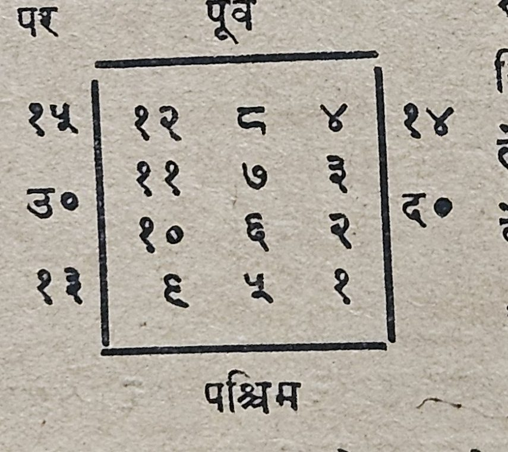

ॐ शिवः
सामवेदीय नित्यकर्म पद्धतिः
उपस्कर्ता—
चन्द्रभूषण द्विवेदी व्या० आचार्य
प्रकाशक—
मिश्रीप्रसाद पाण्डेय
प्रथम संस्करण १००० प्रति
॥ श्रीमङ्गलमूर्तयेनमः ॥
अथ
सामवेद कौथुम शाखीय
नित्यकर्मपद्धतिः
विविधविधिविभिन्नं वाङ्मयं विश्वरूपम् ॥
विधिहरिसुरवर्य्यैर्नारदाद्यै रुपास्यम् ।
द्विजहितकृदनन्तं सामधाम प्रपद्ये ॥१॥
उपस्कर्त्ता
चन्द्रभूषणद्विवेदी
ऋषिकुलब्रह्मचर्याश्रम
महर्षि बच्चूरामद्विवेदा ग्रहार
स्थान—पचरुखिया पो० शंकरपटखौली
जि० देवरिया
उपस्कर्ता—चन्द्रभूषणद्विवेदी ऋषिकुलब्रह्मचर्याश्रम
मुद्रक—दुर्गादत्तत्रिपाठी सन्मार्ग प्रेस, टाउनहाल, काशी ।
उपोद्घातः
वेदों का अध्ययन आजकल लुप्त प्राय हो गया है। ब्राह्मण वर्ग अपनी महत्ता को भूलकर स्वयं भी भूला हुआ है। मैं कौन हूँ? कहां हूं? किसका हूँ? किसके साथ मेरा कौन सम्बन्ध है? कहां से आया हूं? मुझमें कौन सी शक्ति है? इत्यादि बातें भी नहीं जानता। फलतः सभी संस्कार सङ्कीर्ण हो गये हैं, अतएव वेदोक्त कर्मों का फल ठीक २ नहीं मिलता। कर्म-काण्ड लाञ्छित होता है, मेरा तो दृढ विश्वास है कि विधिवैकल्य न हो तो फल में कभी न्यूनता नहीं आ सकती। इसी विचार से सब संस्कारों के मूलभूत नित्य कर्म का प्रकाशन आवश्यक है। यद्यपि वाजसनेयनित्यकर्म गीता प्रेस इत्यादि के द्वारा अनेक विध प्रकाशित हैं, परन्तु सामवेदियों के नित्यकर्म इधर प्रकाश में नहीं आते। अतः एक संक्षिप्त नित्यकर्मपद्धति लिखकर श्रद्धालु सज्जनों को इस ओर आकृष्ट करने का यह एक मेरा प्रयास है। इसे यदि लोग उचित समझें तो मैं अवश्य अपने को सफल समझूँगा।
इति
आश्रम पचरुखिया
चन्द्रभूषण द्विवेदी
आ० शु० ११ रवि०
२००५
आवश्यक वक्तव्य
सरयूपारीण ब्राह्मणों के अतिरिक्त और भी ब्राह्मण इस पवित्र एवं महान् देश में रहने के कारण कलुषित वातावरण से सदा दूर रहे। अच्छे २ धर्मात्मा श्रीमर्यादा, पुरुषोत्तम रामचन्द्रजी प्रभृति शासकों से सुरक्षित रहते हुये अपनी कुटिया में स्वच्छन्द सामवेद का गान करते हुये मनुष्य को क्या! पशु पक्षियों को भी अपने मधुर स्वरों से मुग्ध कर लेते थे। अतः कोई भी उनकी तपस्या में विघ्न-बाधा उपस्थित नहीं कर सकता था, इसी कारण उनकी तपस्या से देश में शान्ति और कल्याण का मार्ग प्रशस्त था। इधर कुछ दिनों से अनेक विध राज्य शासन के प्रबन्धों प्रतिबन्धों के कारण वेद-विद्याओं का लोप होता गया, यहाँ तक कि आज सरयूपारीणों में इने गिने ही वेदज्ञ सुन पड़ते हैं और सामवेद जो यहाँ का निधि था उसकी चर्चा मात्र शेष है। “कश्यपौ वत्स शाण्डिल्यौ कौशिकश्च धनञ्जयः॥ षडेते सामगा विप्राः शेषा वाजसनेयिनः॥” यह शास्त्रीय वचन कहने के लिये रह गया है। यद्यपि इसके अनुसार कश्यप काश्यप वत्स ( भार्गव सावर्ण्य ) कौशिक शाण्डिल्य ये सात गोत्रवाले अपने को सामवेदी कौथुम शाखीय बतलाते हैं, परन्तु उनके सभी संस्कार वाजसनेय माध्यन्दिनीय शाखा के अनुसार हो रहे हैं जो नितान्त अनुचित है। क्योंकि “स्वशाखान्तु समुत्सज्य परशाखा श्रितोहियः। शाखारण्डः स विज्ञेयो न स तत्फलमाप्नुयात्॥” इसके अनुसार प्रायः सभी शाखारण्ड है। और अपने किये हुए सत्कर्मों के पूर्ण फल भागी नहीं होते। अतः प्रत्येक ज्ञानवान् मनुष्य का यह कर्त्तव्य है कि अपने २ वेद, अपनी २ शाखाओं के अनुसार ही अपना नित्य कर्म और अपने संस्कार करें। इसी बात को सबके सम्मुख लाने के लिये आदरणीय पं० चन्द्रभषण द्विवेदीजी ने सामवेद कौथुम शाखीय
आवश्यक वक्तव्य (Foreword) · पृ० २
ब्राह्मणों के लिये यह नित्य कर्म पद्धति प्रस्तुत की है। मैं सब भाइयों से निवेदन करता हूँ कि इसके अनुसार अपना कर्त्तव्य पालन करते हुये आप अपने को न भूलें मेरा दृढ़ विश्वास है कि व्यक्तिगत सुधार के द्वारा ही समाज और समष्टि की सत्ता स्थिर रह सकती है। साथ ही उक्त पण्डितजी से भी यह प्रार्थना है कि क्रमशः सभी संस्कारों की पद्धतियाँ हम लोगों के संमुख उपस्थित करें जिससे हम अपने कर्त्तव्यों को समझकर उसके अनुसार आचरण कर कृतार्थ हों। इस विषय में पण्डितजी ने अपनी एक दुःखद घटना उपस्थित की है, वे बतलाते हैं कि—“मेरी ज्येष्ठ कन्या चि० नर्मदा देवी के विवाह के समय उसके श्वसुर पण्डित केदारनाथ पाण्डेयजी देवरिया निवासी ने यह प्रस्ताव किया कि सामवेदीय पद्धति से ही संस्कार होना चाहिये। परन्तु “यजुः सर्वत्रगीयते” इस वाक्यांश के अनुसार मैंने उक्त प्रस्ताव को अस्वीकृत करके प्रचलित पद्धति के अनुसार ही संस्कार किया। आज अपने प्रिय जामाता पं० विन्ध्यवासिनी प्रसाद पाण्डेयजी के अभाव में परशाखाश्रित कर्म का फल वैयम्य भोग रहा हूँ। आप ब्राह्मण भाइयों से यह प्रार्थी हूँ कि मेरे एकमात्र दौहित्र चि० विजय शंकर कुमार की चिरजीविता का आशीर्वाद दें, जिससे उसकी माता को और मुझे शान्ति मिले” वास्तव में पण्डितजी की इस घटना के और भी कारण हो सकते हैं, परन्तु उनकी दृढ़निष्ठा का परिचय अवश्य इन पंक्तियों में झलकता है। अस्तु हम पण्डितजी के इस प्रयत्न का अभिनन्दन करते हैं और इसकी विशेषता का संक्षिप्त परिचय आपके सामने उपस्थित करते हैं। इस नित्यकर्म में ब्राह्मवेला से लेकर रात्रि शयन पर्यन्त दैनिक कर्त्तव्य की सूची संक्षेप में दी गई है आज की परिस्थिति का ध्यान रखकर विस्तार नहीं किया गया है, इसमें प्रकरण का विभाग अग्निहोत्रियों की दृष्टि से किया गया है परन्तु निरग्निक; जिनकी संख्या अधिक है उनके कर्त्तव्यों की सूचना इस प्रकरण में अवश्य दी गई है—प्रातःस्मरण शौचादि १ दन्त-
आवश्यक वक्तव्य (Foreword) · पृ० ३
धावन २ प्रातःस्नान ३ प्रातः सन्ध्या ४ प्रातर्होम ५ देवपूजा ६ ब्रह्मयज्ञ ७ मध्याह्न कृत्य ८ तर्पण ९ सामपाठ १० वैश्वदेव-बलि ११ पितृयज्ञ १२ मनुष्ययज्ञ भूतबलि १३ भोजन प्रयोग १४ सन्ध्यादि रात्रि कृत्य १५ इन १५ प्रकरणों में यह पुस्तक समाप्त हुई है पूर्वापर विचार करके कर्मों को करना चाहिये प्रथम प्रकरण में अङ्गन्यास एक मुख्य विषय है, सन्ध्या में निर्गुणोपासना का निर्देश मिलता है परन्तु देव-पूजा प्रकरण से सगुण निष्ठा भी दिखलाई गई है। औपासन होम की विधि लिखकर प्रत्येक गृहस्थ को अग्निहोत्र के लिए प्रेरित किया गया है। ब्रह्मयज्ञ तो इसका विषय ही हो गया है। वैश्व-देवबलि में साग्निक, निरग्निक, दोनों का हवन अलग २ दिखाया गया है निरग्निक के लिये सामवेदीय पञ्चभूसंस्कार चित्र सहित दिखलाया गया है। अङ्कों के द्वारा बलि का स्थान भी चित्र से स्पष्ट हो जाता है। तर्पण निरग्निकों के लिए दिखलाया गया है, साग्निकों के लिये भी उसमें संकेत है। पितृयज्ञ मनुष्ययज्ञ साग्निक ही अलग २ करें, निरग्निक तो वैश्वदेवबलि के बाद भूतबलि करके कृतार्थ हो जांय। इस प्रकार निरग्निक लोग प्रातःस्मरण शौचाचमन प्रातःस्नान सन्ध्या तर्पण देवपूजा ब्रह्मयज्ञ वैश्व-देवबलि भूतबलि करके कर्त्तव्य पूरा करें मध्याह्न कृत्य में सन्ध्या, सामपाठ से उन्हें अवकाश दिया गया है। मैं श्रद्धालु पुरुषों से यह प्रार्थना करता हूँ कि अपने नित्यकर्मों को इस पद्धति द्वारा चलाने का प्रयत्न करें। संशोधन आदि की कुछ अशुद्धियाँ रह गयी हों तो पाठकगण उसे क्षमा करेंगे। पुनः प्रकाशन के अवसर पर शुद्ध और सस्वर प्रकाशन की व्यवस्था की जायेगी।
पं० मिश्री प्रसाद पाण्डेय व्याकरणाचार्य
अध्यापक
बैद्यनाथ सं० पाठशाला, चौक, काशी।
चित्र — श्री पं० चन्द्रभूषण द्विवेदी (Portrait)

श्री पं० चन्द्रभूषण द्विवेदी
चित्र — श्री पं० बच्चन मिश्र (Portrait)
श्री पं० बच्चन मिश्र
श्री मंगलमूर्त्तये नमः
परिचय
कविवर जयशंकर ‘प्रसाद’ जी की यह उक्ति कि—
भला विश्व में किसको दूँ,
चिनगारी आँखों से उठती,
ठहरो रो लूँ, दम ले लूँ।
इसके विषय में उनकी क्रान्तदर्शिता प्रकट कर रही है। वस्तुतः यह एक गूढ़ विषय है जिसका प्रारम्भ व्यक्ति के परिचय से है तथा ईश्वर में पर्यवसित होती है इसकी सीमा। अस्तु, एक छोटे से परिवार का परिचय यहाँ पर मैं प्रस्तुत कर रहा हूँ।
भारतवर्ष की जातियाँ गोत्र-प्रधान हैं। पुराण प्रसिद्ध ( दशविध ) ब्राह्मणों में उत्तर के सरयूपारीण ब्राह्मण भारतवर्ष में अपना महत्त्वपूर्ण स्थान रखते हैं। इनके आचार-विचार भी अनोखे हैं। ये परिस्थिति-वश दूर-दूर तक जा कर बसते थे किन्तु स्वदेश प्रेम उन्हें पुनः यहाँ खींच लाता था।
सृष्टि का प्रारम्भ हिरण्यगर्भ ब्रह्माजी से है। उनके मानसपुत्र महर्षि मरीचि थे, इनके पुत्र कश्यपजी प्रजापति हुये, महर्षि असित और देवल इनके कुल के प्रवर हैं। त्रेतायुग में भगवान् रामचन्द्रजी के द्वारा गर्ग, गौतम, शाण्डिल्य, पराशर, भरद्वाज, कश्यप, वत्स, वसिष्ठ, उपमन्यु, कात्यायन, घृतकौशिक, भार्गव, सांस्कृत, सावर्ण्य, कृष्णात्रेय, अगस्त्य, कौण्डिन्य इन सत्रह गोत्रवाले ब्राह्मणों को सरयू-पार का राज्य मिला। अतः इसे वे अपना समझते हैं। कश्यप-
गोत्रीय ब्राह्मणों का सामवेद, गान्धर्व उपवेद, कौथुमी शाखा, गोभिल-सूत्र, वामपाद, वाम शिखा विष्णु, देवता हैं। कश्यपगोत्रीय ब्राह्मणों की एक शाखा १० वीं शताब्दी में कान्यकुब्ज ( कन्नौज ) में जा बसी। वहाँ के गहरवार क्षत्रिय राजाओं के गुरु भी बन गये, प्रथानुसार मन्त्रिमण्डल में भी रहते थे। परन्तु जब राजा जयचन्द्र महाराज पृथ्वीराज के विरुद्ध मुहम्मदगोरी को सहायता देने को तत्पर हुये तो उनके कोई भाई ( जिनका नाम अज्ञात है ) और गुरुजी ने विरोध किया, परन्तु राजा न माने और वे लोग उस राज्य को छोड़कर विन्ध्याचल के पास चले आये। वहां के भील जातीय राजाओं को पराजित करके एक छोटा सा राज्य स्थापित किये, जिसकी राजधानी विजयपुर के नाम से प्रसिद्ध हुई जो आज भी वर्तमान है। पूर्वोक्त गुरुजी के मन्त्रित्व में नये राजा ने राज्यभार सम्हाला। कन्तिथ परगना में खड़ाऊँ पर चढ़े हुये द्विवेदीजी को गङ्गा पार करते देखकर परवा नामक ग्राम में बसने के लिये राजा ने आग्रह किया। अपने साथ राज्यस्थापन में क्षत्रियोचित वीरता के अनुसार राजा ने सिंह की पदवी भी दी, जो आज भी उस कुल में वर्तमान है। गोरखपुर के विश्वेन-वंशी राजा रुद्रपुर के यहाँ विजयपुर की राजपुत्री का विवाह निश्चित करने के लिये शोभन सिंह शर्मा द्विवेदीजी यहाँ आये विवाह के बाद भी कई बार उन्हें यहाँ आना पड़ा। विद्वानों की परीक्षा के लिये यहाँ बड़े २ विद्वान् रहते थे एक दुन्दुभी राजसभा में रक्खी थी जो जितने शास्त्रों का ज्ञाता होता उतनी बार उसे बजाता, शोभनशर्मा ने १२ बार दुन्दुभी बजाई। राजसभा में उनकी हँसी उड़ाई जाने लगी, शास्त्र तो ६ ही होते हैं १२ कहाँ से आये। पण्डितजी ने बतलाया नास्तिकों के भी तो ६ दर्शन हैं मैं उन्हें भी अच्छी प्रकार जानता हूँ। शास्त्रार्थ में विजयी होनेपर यहाँ के राजा ने सेंहुड़ा सोखवर नामक दो गाँव दिये और यहीं रहने की प्रार्थना की द्विवेदीजी को भी सरयूपार का प्रेम था यहीं बस गये। उन गाँवों में अब तक उनके वंशज वर्त्त-
मान हैं और इधर उधर भी बहुत फैले हुये हैं। समय के परिवर्तनवश यह प्रदेश लखनऊ राज्य के अधीन हुआ, नवाब के राज्य में राजकीय कर के लिये कठोर दण्ड था, सेहुड़ा के धिनहू द्विवेदी भाइयों से अलग होकर पूरी जमीन्दारी के रहते भी कर देने में असमर्थ थे, राज कर्मचारियों के अत्याचार से उद्विग्न होकर पथरदेवा बाजार के पास भेलीपटी में अपने शिष्य एक अहीर के घर जा बसे। उसकी सहायता से कुछ खेती भी वहीं कर ली, साधारण पढ़े लिखे थे उस से भी कुछ आय हो जाती, सन्तोषपूर्वक ब्राह्मण वृत्ति से निर्वाह करने लगे। उनके एकमात्र पुत्र अनङ्ग द्विवेदी ने भी पिता के अनुसार ब्रह्मवृत्ति से अपना जीवन निर्वाह किया। इनके चार पुत्र हुये पं० देवदत्त द्विवेदी, त्रिवेणी द्विवेदी, अयोध्या द्विवेदी, डीहा द्विवेदी। पं० देवदत्तजी विद्याप्रेमी थे वे अपने पुत्र पं० गोविन्द द्विवेदी को व्याकरण के अतिरिक्त शांकर वेदान्त का पूर्ण ज्ञान कराने के निमित्त सिसवा निवासी पं० रामनिरञ्जन स्वामीजी के पास भेजा जो सन्यासाश्रम में श्रीमहादेवाश्रम नाम से प्रसिद्ध हुये, काशी में गायघाट के स्वामीजी कहे जाते थे। उन दिनों अद्वैत का प्रतिपादन उनके समान किसी का नहीं था। अध्ययनकाल में हथुआ राज्य से छात्रवृत्ति मिलती थी, अध्ययन पूराकर पं० गोविन्द द्विवेदीजी जब घर चलने को प्रस्तुत हुये, महाराजा ने अपने यहां रहने की प्रार्थना की। सेवा को असद् वृत्ति बतलाकर उसे अस्वीकार कर दिया अपने घर पर धर्मार्थ पढ़ाया करते थे। उनके पुत्र पं० कृष्णराम द्विवेदी पूर्ण युवा हो जाने पर विद्याध्ययन को निकले लखिमा में पूज्य पं० लालविहारी उपाध्याजी के पास अल्पकाल में पूर्ण पाण्डित्य प्राप्त किया, पूज्यपयहारीजी महाराज की शास्त्रार्थ सभा के मध्यस्थ थे उनके विना कोई निर्णय नहीं होता था। दोनों शेखर उन्हें कण्ठाग्र थे मुक्तावली की फक्किकायें कोडपत्र के साथ कण्ठस्थ थीं। इनके अध्ययनकाल में ही इनके पुत्र पं० बच्चूराम द्विवेदी अपने पितामह से सिद्धान्त कौमुदी पढ़ रहे थे, पिताजी के लौटने पर पितामह
के आदेशानुसार प्रश्न कर बैठते, पितापुत्र से जमकर शास्त्रार्थ होता था पितामहजी पौत्र के पक्ष का समर्थन करते इनकी प्रतिभा देखकर प्रसन्न होते, १८ वर्ष में ही इन्होंने व्याकरण समाप्त किया। तबतक पिताजी पूर्ण विद्वान् हो गए थे बाद नव्यन्याय की शिक्षा के लिए वे अपने पिता के गुरुजी के पास गये। उन्होंने गोरखपुर के सम्मान्य पं० नकछेद रामजी ( उमापति द्विवेदी ) के पास भेजा। वहां नव्य-न्याय के साथ षड्दर्शनों का ज्ञान दो वर्षों में ही इन्होने प्राप्त किया। गुरुजी की आज्ञा से वहाँ के नये अंग्रेजी स्कूल में कुछ दिन संस्कृताध्यापक रहे। अपनी विद्या में बाधा पड़ते देखकर विद्याधर्मवर्द्धिनी संस्था बलुआ में अध्यापन करने लगे। पं० प्रवर पंक्तिपावन श्रीचन्द्रशेखरधर मिश्रजी इनकी प्रतिभा से आकृष्ट हुये। बगहा चम्पारण्य में एक पाठशाला खोलकर बुला ले गये, परवा के द्विवेदी होने के कारण कुल परम्परानुसार अपना आचार्य बनाये और अपने भाई श्रीवागीश्वरीधरजी को सौंप दिया। घर से वहां जाते समय पडरौना के राजा उदितनारायणसिंहजी ने शास्त्रार्थ कराया पण्डितों के पराभूत होने पर अपने पिताजी से शास्त्रार्थ हुआ जो इनके साथ ही थे। राजा ने आग्रहपूर्वक अपने यहां रहने को वाध्य किया। वहां ३० वर्षों तक सम्मानपूर्वक रहे। वर्त्तमान पडरौना नरेश श्रीव्रजनारायणसिंह जी को भी शिक्षा दी। विद्वत्ता की धाक से आकृष्ट होकर १९२० ई० में तमकुही के मनस्वी राजा इन्द्रजित प्रताप बहादुर साहीजी ने महाभारत के गूढार्थ प्रकाशन के लिये आमन्त्रित किया। ६ वर्षों में शंका समाधानपूर्वक उन्हें महाभारत सुनाकर काशी निवासी हुये। दक्षिणा में १ सहस्र सुवर्ण मुद्रा के अतिरिक्त पचरुखिया ग्राम में ३६ बीघे की भूमि प्राप्त हुई १९३१ ई० भाद्र कृष्ण ८ गुरुवार को कैलाशवासी हुये। काशी के प्रसिद्ध विद्वान् म० म० पं० जयदेवमिश्रजी भी इन्हें पराजित नहीं कर पाते थे और संमानित करते थे। इन्होंने शैव सर्वस्व, जन्माष्टमीनिर्णय, श्रीकृष्ण महास्नान, दुर्गोत्सवपद्धति,
श्रीकृष्णाष्टक, शिवशतक, शिवार्चनपद्धति, इन ७ ग्रन्थों की रचना की है। इनके दो अनुज पं० कान्तारामद्वि० और पं० रामप्रतापद्वि० थे जो इनके पहले ही दिवङ्गत हो गए थे। वर्त्तमान में पं० शिवप्रसाद द्विवेदी पं० चन्दभूषण द्विवेदी पं० हरिहर द्विवेदी तीन पुत्र और (पं० उमापति द्विवेदी एक भ्रातुष्पुत्र है। सभी विद्वान् हैं पं० शिवप्रसाद जी व्या० आ० उदितनारायण कालेज के प्रोफेसर हैं संस्कृत के मार्मिक विद्वान् और कवि भी हैं, इनकी लक्ष्मी स्तुति बड़ी सुन्दर है। अनुजों पर पितृ तुल्य प्रेम रखते हैं। पं० उमापति द्विवेदी (कविपति) संस्कृत के उद्भट कवि है तमकुही के राजव्यास हैं पारिजातहरण महाकाव्य की रचना कर रहे हैं जो माघ की कविताओं से टक्कर ले रहा है। व्या० आ० चन्द्रभूषण द्विवेदी ब्रह्मचारी जगदानन्दजी द्वारा स्थापित श्री कुबेरनाथ विद्यालय में १६ वर्षों तक प्र० अध्यापक पद पर रहकर सम्प्रति ऋषिकुल ब्रह्मचर्याश्रम पचरुखिया का संचालन कर रहे हैं। श्रीहरिहरदत्त द्विवेदी ज्योतिष के निपुण विद्वान् हैं। इन लोगों के भी पुत्रपौत्र वर्त्तमान हैं।
परिचायक
आचार्य पं० मिश्रीप्रसाद पाण्डेय
ऋषिकुल का परिचय (The Ṛṣikula āśrama)
ऋषि कुल का परिचय
ऋषिकुल ब्रह्मचर्याश्रम महर्षि बच्चूराम द्विवेदाग्रहार पचरुखिया-घाट वै० सं० १९९९ वै० शु० ५ सोम को श्री पं० चन्द्रभूषण द्विवेदीजी ने अपने पूज्य पिता की पुण्य स्मृति में सनातनधर्म की रक्षा द्विजों में सन्ध्यादिवैदिक कृत्य के प्रचार और वैदिक मर्यादाओं की रक्षा के लिए संस्थापना की। यह एक समिति के अधीन चलाया जाता है। २५) से अधिक दान देनेवाले व्यक्ति इसके संरक्षक माने जाते हैं।
विशेष संरक्षक
श्रीमतीरानीसाहबा—तमकुही,
श्रीराजाबहादुर—पडरौना,
श्रीरायबहादुर—पडरौना।
संरक्षक
पं० व्रजबिहारीमिश्रजी भरवलिया,
पं० बलराम त्रिपाठीजी सहुआडीह,
पं० वच्चनमिश्रजी सखुई
पं० केदारनाथमिश्रजी कोटवा सभापति,
पं० स्वामीनाथ त्रिपाठीजी घोटप, उ० स०,
पं० रामधारी पाण्डेयजी वंजरिया अध्यक्ष,
बाबू गौरी कान्तकिशोरसाहीजी माधोपुर,
श्रीमान् हीरासाहब बहादुरजी खानगी,
श्रीमान् महाराज कुमार श्रीकृष्णप्रसाद बहादुरसाहीजी सरौरा,
पं० वच्चन मिश्रजी का परिचय
सृष्टि के प्रारंभ में ब्रह्माजी के मानस पुत्र भृगुजी के वंशज श्रीदाधीच मुनि के द्वारा दुर्वासाजी के शाप से भूलोक में अवतरित साक्षात् सरस्वतीजी के गर्भ से महामुनि वत्सजी की उत्पत्ति हुई। अतएव उनके प्रभाव से वत्सगोत्र संसार में परम पूजनीय है। बौद्धावतार के कुछ ही दिन पहले सरयू के तट पर देवमूँगां ग्राम में इसी गोत्र के महातपस्वी श्रीमयूर मिश्रजी निवास करते थे। ब्रह्मचर्यावस्था में ही इनके परम तेज से चकित होकर अयोध्यानरेश महाराज विवोधदेव ने अपनी कन्या देकर उत्तराधिकारी बनाने का प्रस्ताव किया। वर्णक्रम से विवाह की स्वीकृति देकर पहले उन्होंने ब्राह्मण कन्या द्वारा नागेश मिश्र को उत्पन्न किया वाद भूमिहार कन्या से व्याघ्रकूर्च और विवोधदेव की कन्या से विश्वसेन को उत्पन्न किया। व्याघ्रकूर्च ने भी राज्य में भाग लिया, नागेशजी ने उसे अस्वीकार किया पिता ने कुलजीविका निमित्त दोनों राजकुलों की आचार्यता इन्हें दी जो आजतक चली आती है। नागेश मिश्रजी ने महाराज विश्वसेन की राजधानी मध्यपल्ली ( मझौली ) के पास पयासी ग्राम में अपना आवास बनाया। वे धनधान्य सम्पन्न होने से स्वयं बड़े २ यज्ञ करते थे, उसमें कश्यप गोत्रीय द्विवेदी लोगों की ही प्रायः आचार्यता रहती थी अतः इनके कुल के वे ही आचार्य हुये। अब भी पयासी के मिश्रों के पुरोहित प्रायः परवा के दूबे लोग ही चले आते हैं इसी के द्वारा कुल का परिचय होता है। इसी वंशावली के कोई सत्पुरुष पडरौना के समीप सखुई ग्राम में आकर बसे यहां से भी शाखायें फैली एक शाखा सखुई के शंकरदत्त मिश्रजी के वंशज में धर्मानुरागी पं० वच्चन मिश्रजी वर्त्तमान हैं जिनकी सहायता से यह पुस्तक छप रही है। इन्हें भाइयों के विरोध से पैतृक सम्पत्ति कुछ भी न मिली परन्तु
पं० वच्चन मिश्रजी का परिचय · पृ० २
अपने पौरुष से इन्होंने पूर्ण सम्पत्ति का उपार्जन किया है, इनका घर धन-धान्य से पूर्ण है। सुधाधवल गृह एक राजकीय दुर्ग के समान बना हुआ है प्रति वर्ष शारद नवरात्र में शतचण्डी महायज्ञ समारोह के साथ करते हैं। इनके एकमात्र आज्ञाकारी पुत्र बाबू सत्यनारायण मिश्रजी पिता के समान ही धर्मानुरागी और गृहकार्य में दक्ष हैं। इनके तीन पुत्र ज्येष्ठ चि० वशिष्ठमिश्र जिनके उपनयन संस्कार के उपलक्ष में यह नित्यकर्म पद्धति प्रकाशित की जा रही है। द्वितीय चि० देवेन्द्र मिश्र तृतीय राघवेन्द्र मिश्र हैं। ईश्वर इस कुल को चिरंजीवी और समृद्ध रखें यही प्रार्थना है।
इतिशुभम्
चन्द्रभूषणशर्मा
दीपावली २००५
सामवेदीय नित्यकर्म प्रयोग-सूची
| विषय | पृष्ठ संख्या | |
|---|---|---|
| १ | प्रातःस्मरण शौचादि प्रकरणम् | १ |
| २ | दन्तधावन प्रकरणम् | ६ |
| ३ | प्रातःस्नान प्रकरणम् | ६ |
| ४ | प्रातःसन्ध्या प्रकरणम् | ९ |
| ५ | प्रातर्होम प्रकरणम् | १३ |
| ६ | देव पूजन विधिः | १७ |
| ७ | ब्रह्मयज्ञ प्रयोगः | २१ |
| ८ | मध्याह्न कृत्य | २३ |
| ९ | तर्पण विधिः | २४ |
| १० | मध्याह्न सामपाठः | २८ |
| ११ | वैश्व देवबलिः | ३० |
| १२ | पितृयज्ञः | ३३ |
| १३ | मनुष्य यज्ञः ( भूतबलिः ) | ३४ |
| १४ | भोजन विधिः | ३५ |
| १५ | सन्ध्यादि रात्रिकृत्यम् | ३६ |
प्रातःस्मरण शौचादि प्रकरणम् · पृ० १
✻ श्री मङ्गलमूर्तये नमः ✻
अथ सामवेदीय नित्यकर्मप्रयोगः
प्रातःस्मरण शौचादि प्रकरणम्
कलयति सुकृतेषु सिद्धिमाराद्भुवि च परत्र कृती मनुष्यलोकः॥१॥
नत्वा लेखितुमुद्युञ्जे गोभिलाद्यार्यपादुकाः॥
सामगानामियं भूयान्नित्यकर्मसृति इशुभा॥२॥
कल्याण-मार्गानुसारी द्विजों को दो घण्टा रात शेष रहने पर जाग जाना चाहिए। आगे के दिन का कार्य क्रम बना कर आय व्यय की भी चिन्ता कर लेनी चाहिए। ॐ नमः परमात्मने” इस मन्त्र का उच्चारण कर सर्वान्तर्यामी सर्वशक्तिमान् शुद्ध-बुद्ध-मुक्त-स्वरूप सच्चिदानन्द विग्रह अद्वितीय पर ब्रह्म परमात्मा का ध्यान करें और निम्नाङ्कित मन्त्रों से इष्टदेव का प्रातः स्मरण करें।
गङ्गाधरं वृषभवाहनमम्बिकेशम्॥
खट्वाङ्ग-शूल-वरदाभयहस्तमीशं
संसार-रोगहरमौषधमद्वितीयम्॥१॥
प्रातःस्मरामि गिरिशं गिरिजार्द्धदेहं
सर्गस्थिति प्रलय कारण मादि देवम्॥
विश्वेश्वरं विजितविश्वमनोभिरामं
संसाररोगहरमौषधम द्वितीयम्॥२॥
प्रातःस्मरामि शिवमेक मनन्त माद्यं
वेदान्त वेद्यमनिशं पुरुषं महान्तम्॥
प्रातःस्मरण शौचादि प्रकरणम् · पृ० २
संसार रोग हरमौषध मद्वितीयम्॥३॥
प्रातःसमुत्थाय शिवंविचिन्त्य श्लोकत्रयं येनुदिनं पठन्ति॥
ते दुःखजातं भवजन्मसंचितं हित्वा पदं यान्ति तदेव शंभोः॥४॥
नारायणं गरुड—वाहनमब्जनाभम्॥
ग्राहाभिभूतवरवारणमुक्तिहेतुं
चक्रायुधं पतगराजभुजाधिरूढम्॥५॥
प्रातर्भजामि भजतामभयङ्करं तं
प्राक्सर्वजन्मकृतपापभयापहत्यै॥
यो ग्राहवक्त्र—पतिताङ्घ्रिगजेन्द्रघोर
तापत्रयोद्धृतकरो धृतशङ्खचक्रः॥६॥
प्रातर्नमामि मनसा वचसा च मूर्ध्ना
पादारविन्द युगलं परमस्य पुंसः॥
नारायणस्य नरकार्णवतारणस्य
पारायणप्रवणविप्रपरायणस्य॥७॥
श्लोकत्रयमिदंपुण्यं प्रातः प्रातः पठेन्नरः॥
लोकत्रयगुरुस्तस्मै दद्यादात्मपदं हरिः॥८॥
गुरुश्चशुक्रः शनिराहुकेतवः कुर्वन्तु सर्वे मम सुप्रभातम्॥९॥
प्रभाते यः स्मरेन्नित्यं दुगादुर्गाक्षर द्वयम्॥
आपदस्तस्य नश्यन्ति तमस्सूर्योदये यथा॥१०॥
भृगुर्वसिष्ठः क्रतुरङ्गिराश्च मनुः पुलस्त्यः पुलहश्चगौतमः॥
रैभ्योमरीचिश्च्यवनश्चदक्षः कुर्वन्तुसर्वे मम सुप्रभातम्॥११॥
सनत्कुमारः सनकः सनन्दनः सनातनोप्यासुरिपिङ्गलौच॥
सप्तस्वराः सप्तरसातलानि कुर्वन्तुसर्वेमम सुप्रभातम्॥१२॥
प्रातःस्मरण शौचादि प्रकरणम् · पृ० ३
भूरादि कृत्वा भुवनानि सप्त कुर्वन्तु सर्वे मम सुप्रभातम्॥१३॥
पृथ्वीसगन्धा सरसास्तथापः स्पर्शीचवायु र्ज्वलितं वतेजः॥
नभः सशब्दं महता सहैव कुर्वन्तु सर्वे मम सुप्रभातम्॥१४॥
अविमुक्तचरणयुगलं दक्षिणमूर्त्तेश्च कुक्कुटचतुष्कम्॥
स्मरण मपि बाराणस्या निहन्ति दुःस्वप्न मपशकुनंच॥१५॥
पंचकन्याः स्मरेन्नित्यं महापातकनाशनम्॥१६॥
पुण्यश्लोकोनलो राजा पुण्यश्लोको युधिष्ठिरः।
पुण्यश्लोकाचवैदेही पुण्यश्लोको जनार्दनः॥१७॥
अयोध्या मथुरा माया काशी काञ्चीअवन्तिका।
पुरी द्वारावती चैव सप्तैतामोक्षदायिकाः॥१८॥
शिवः काशी शिवः काशी काशी काशी शिव शिवः।
वारत्रयं पठेन्नित्यं काशी वासफलं लभेत्॥१९॥
कर्कोटकस्य नागस्य दमयन्त्या नलस्य च।
ऋतुपर्णस्य राजर्षेः कीर्त्तनं कलिनाशनम्॥२०॥
आदित्यस्य नमस्कारं ये कुर्वन्ति दिनेदिने।
जन्मान्तरसहस्रेषु दारिद्र्यंनोपजायते॥२१॥
कराग्रे वसते लक्ष्मीः करमूले सरस्वती।
करमध्येतु गोविन्दः प्रभाते करदर्शनम्॥२२॥
महाप्रसादजननी सर्वसौभाग्यवर्द्धिनी।
आधिव्याधिहरानित्यं तुलसित्वन्नमोऽस्तुते॥२३॥
गावो मे अग्रतः सन्तुगावो मे सन्तु पृष्ठतः।
गावो मे हृदये सन्तु गवां मध्ये वसाम्यहम्॥२४॥
अश्वत्थामा बलिर्व्यासो हनूमाँश्च विभीषणः।
कृपः परशुरामश्च सप्तैते चिरजीविनः॥२५॥
प्रातःस्मरण शौचादि प्रकरणम् · पृ० ४
जीवेद्वर्षशतं साग्रमपमृत्युर्विवर्जितः॥२६॥
आदित्यश्च उपेन्द्रश्च चक्रपाणिर्महेश्वरः।
दण्डपाणिः प्रतापी स्यात्क्षुद्बाधा च न वाधते॥२७॥
वसु र्वरुणसोमौच सरस्वती च सागरः।
पञ्चैतान्स्मरतोनित्यं तृषा तस्य न वाधते॥२८॥
सनत्कुमार देवर्षि शुक भीष्म प्लवङ्गमाः।
पञ्चैतान्स्मरतो नित्यं कामवाधा विनश्यति॥२९॥
उमा उषा च वैदेही रमा गङ्गेतिपंचकं।
प्रभातेयः स्मरेन्नित्यं सौभाग्यन्तस्य वर्धते॥३०॥
हरं हरिं हरिश्चन्द्रं हनुमन्तं हलायुधं।
पञ्चैतान्स्मरतो नित्यं घोरसंकटनाशनम्॥३१॥
हरे राम हरे राम राम राम हरे हरे।
हरे कृष्ण हरे कृष्ण कृष्ण कृष्ण हरे हरे॥३२॥
सर्वस्वरूपे सर्वेशे सर्वशक्ति समन्विते।
भयेभ्यस्त्राहि नो देवि दुर्गे देवि नमोऽस्तुते॥३३॥
इन मन्त्रों का कम से कम आठ २ वार जप करे।
देशोयं क्षोभरहितो ब्राह्मणाः सन्तु निर्भयाः॥३४॥
सर्वे च सुखिनः सन्तु सर्वे सन्तु निरामयाः।
सर्वेभद्राणिपश्यन्तु मा कश्चिद्दुःखभाग्भवेत्॥३५॥
अखण्डमण्डलाकारं व्याप्तंयेन चराचरं।
तत्पदं दर्शितयेन तस्मै श्रीगुरवेनमः॥३६॥
स्वस्ति प्रजाभ्यः परिपालयन्ता न्न्याय्येन मार्गेण महीं महीशाः॥
गोब्राह्मणेभ्यःशुभमस्तु नित्यं लोकाःसमस्ताःसुखिनो भवन्तु॥३७॥
हर हर हर शब्द मादितो वै सकृदभिधाय मुनीन्द्रवर्यवृन्दः॥
प्रातःस्मरण शौचादि प्रकरणम् · पृ० ५
धर्म की ३ जयहो ३, अधर्म का ३ नाश हो ३, प्राणियों में ३ सद्भावना हो ३ विश्व का ३, कल्याण हो ३, हर हर महादेव इस तरह प्रातःस्मरण करके—
ॐ परमगुरुभ्योनमः॥ ॐ परात्पर गुरुभ्योनमः। ॐ परमेष्ठिगुरुभ्योनमः। इस तरह नमस्कार करके ॐ समुद्रमेखले देवि पर्वतस्तनमण्डले। विष्णुपत्निनमस्तुभ्यं पादस्पर्शंक्षमस्वमे। इस मन्त्र से भूमिको प्रणाम कर के दाहिना चरण भूमिपर रक्खे। एक बड़े जलपात्र में जल और शौचार्थ मृतिका लेकर गांव से बाहर नैर्ऋत्य कोण में दो सौ धनुष दूर जाकर देवालय, नदी तालाब के समीप, मार्ग, गौओं के स्थान, भस्म, बाँबी, पर्वत, चिताभूमि, यज्ञभूमि को छोड़कर निर्जन स्थान में जलपात्र रखकर मृतिका का दो भाग कर के अलग रक्खे। जनेऊ कण्ठी की तरह कर के दाहिने कानपर चढ़ा ले शिरपर कपड़ा बाँध ले मुख और नाक पर भी वस्त्र डाल दे सूखो घास से भूमि को ढककर दोनों सन्ध्या और दिन में उत्तर मुख होकर मलमूत्र त्याग करे, रात में दक्षिण मुख होकर। उस समय ऊपर, नीचे, वायु, ब्राह्मण, सूर्य, अग्नि, जल किसी को न देखे—अन्धेरी रात में भय होनपर दिशा का कोई नियम नहीं है। मलमूत्रत्याग के वाद जलपात्र के पास आकर मूत्रेन्द्रिय में एक बार मलेन्द्रिय में तीन बार मृत्तिका लगाकर स्वच्छ धो ले। और दूसरी मृत्तिका लेकर बाँया हाथ १० बार, दोनों हाथ सात बार धो ले। कच्छ बाँधकर कूँआँ या जलाशयपर आकर एक २ बार मिट्टी से दोनों चरण एक-एक बार दोनों हाथ मिट्टी से मलकर जलपात्र में तीन बार मिट्टी लगाकर स्वच्छ धो डाले और बारह कुल्ले कर के शुद्ध हो जाय। ( केवल मूत्र त्याग के बाद ४ कुल्ले, भोजन के बाद १६, फल इत्यादि खाकर १ कुल्ला करना चाहिये ) इसके बाद स्थिर आसन
आचमन विधि, दन्तधावन, प्रातःस्नान · पृ० ६
पर बैठकर घुटनों के भीतर हाथ करके हथेली में एक उड़द के डूबने योग्य जल लेकर तीन बार आचमन करके दोनों ओठ अगूँठे के मूल से पोंछ दे, शिर और पैर पर भी कुछ जल छिड़के। फिर हाथ में जल लगाकर बीच की अङ्गुलियो से मुख, अगूँठा तर्जनी से नाक के छिद्र, अगूठा अनामिकासे आँखें, इन्हीं दोनों से दोनों कान, अंगूठा कनिष्ठिका से नाभि, हथेली से हृदय, सभी अङ्गुलियों से शिर, अङ्गुलियों के अग्र भाग से दोनों बाहुओं की जड़का जल से स्पर्श करे। आचमन के समय खड़ा रहना, चलना, बोलना, हँसना पैर फैलाना, प्रणाम करना निषिद्ध है तथा अपसव्य होकर, जनेऊ को कंठी के समान करके, खड़ाऊँ जूता पहने हुये, एक वस्त्र रहकर गले और शिर में कपड़ा लपेटकर भी आचमन नहीं करना चाहिये। इत्याचमन विधिः।
अथदन्तधावन विधिः। अष्टमी, षष्ठी, एकादशी, द्वादशी, चतुर्दशी, अमा, पूर्णिमा, संक्रान्ति, व्रत, श्राद्ध और श्राद्ध के पूर्व का दिन वर्जित कर आम, पलाश, बेल चिचिड़ा सिरस खैर करञ्ज कनैल कदम्ब साखू और दूधवाले गूलर इत्यादि का ८ या १० अङ्गुल लम्बे कनिष्ठिका के समान मोटे दन्तधावन से दाहिने ओर से दाँतों को धोवे, छिल्का रहित फटा हुआ दातुन नहीं चाहिये। ॐ आयुर्बलं यशोवर्चः प्रजाः पशुवसूनिच। ब्रह्मप्रज्ञांचमेधांचत्वन्नोधेहि वनस्पते॥ इस मन्त्र से दाँतों को शुद्धकर दातुन चीरकर उसी से जीभ को भी शुद्ध कर ले, चीरे को तोड़कर धोकर फेंक दे, बारह कुल्ले कर के शुद्ध हो जाय। निषेध के दिनों में मञ्जन या मिट्टी से दाँत धोकर चीरे से जीभ साफ करे। इतिदन्त धावनम्।
अथप्रातः स्नानम्। शुद्ध मृतिका और कुश लेकर जलाशय परजाय तट को धोकर रख दे, हाथ पाँव धोकर पूर्वमुख बैठे शिखा बाँधकर आचमन करके संकल्प करे—
हरिः ॐ अद्येत्यादि देश कालौ संकीर्त्य ॐ नमः परमात्मने पुराणपुरुषोत्तमाय विष्णोराज्ञया प्रवर्त्तमानस्य
ब्रह्मणो द्वितीय परार्धे श्रीश्वेत बाराहकल्पे जम्बूद्वीपे भरतखण्डे भारतवर्षे आर्यावर्त्तैकदेशे विष्णुप्रजापतिक्षेत्रे ( सरयू पार देशे सरयू नारायण्यो रन्तरालेऽमुकग्रामे ) अष्टाविंशतितमे कलियुगे प्रथमचरणे वौद्धावतारे विक्रमशकेऽमुकवत्सरेऽमुकायनेऽमुकऋतौ अमुकमासेऽमुकपक्षेऽमुकराशिस्थिते सूर्येऽमुकतिथौ अमुकवासरे तत्तत्स्थानस्थितेषु नक्षत्रग्रहादिषु अमुकगोत्रोऽमुकप्रवरः अमुक शर्माहं श्रीपरमेश्वर प्रीत्यर्थ प्रातःस्नानंङ्करिष्ये” यह संकल्प करके।
ॐ इदं विष्णु विर्चक्रमे त्रेधा निदधे पदम्॥ समूढमस्यपांसुले॥१॥ त्रीणि पदा विचक्रमे विष्णु गोपा अदाभ्यः॥ अतो धर्माणि धारयन्॥२॥ विष्णोः कर्माणि पश्यत यतोव्रतानि पस्पशे। इन्द्रस्य युज्यः सखा॥३॥ तद्विष्णोः परमं पदं सदापश्यन्ति सूरयः। दिवीव चक्षुराततम्॥४॥ तद्विप्रासो विपन्यवो जागृवांसः समिन्धते॥ विष्णोर्यत् परमं पदम्॥५॥ अतोदेवा अवन्तुनो यतो विष्णुर्विचक्रमे॥ पृथिव्या अधिसानवि॥६॥
इन ६ मन्त्रों से मृतिका का अभिमन्त्रण करके नाभि से ऊपर दाहिने हाथ से और नीचे बाँये हाथ से लेपन करके जलाशय में ॐ आपो हिष्ठा मयोभुवः। ओं तान ऊर्जे दधातन। ओं महेरणाय चक्षसे। ॐ यो वः शिवतमोरसः। ॐ तस्य भाजयतेहनः। ओं उशतीरिव मातरः। ॐ तस्मा अरंग मामवः। ॐ यस्य क्षयाय जिन्वथ। ॐ आपोजन यथा चनः।
इन नौ मन्त्रों से कुश द्वारा मार्जन करके स्नान करे जल में डूबकर ॐ ऋतं च सत्यं चाभीद्धात्तपसोऽध्यजायत ततो रात्र्यजायत ततः समुद्रोअर्णवः समुद्रादर्णवादधि संवत्सरो अजायत अहोरात्राणि विदधद्विश्वस्य मिषतो वशी सूर्याचन्द्रमसौ धाता यथापूर्वमकल्पयत् दिवं च पृथिवीं चान्तरिक्ष मथोस्वः। इस अघमर्षण सूक्त का तीन या एक बार जप करे फिर
प्रातःस्नान प्रकरणम्; प्रातःसन्ध्या विधिः · पृ० ८
आपोहिष्ठा इत्यादि से मार्जन करके जल से वाहर आवे और स्नानाङ्ग-तर्पण करे देव तीर्थ से।
ॐ ब्रह्मादयो देवास्तृप्यन्तु। देवपत्न्य स्तृप्यन्तु। देवसुतास्तृप्यन्तु। देवगणास्तृप्यन्तु। जनेऊ कण्ठी करके ऋषि तीर्थ से ॐ गोतमादय ऋषय स्तृप्यन्तु। ऋषिपत्न्यस्तृप्यन्तु। ऋषिसुतास्तृप्यन्तु ऋषिगणा स्तृप्यन्तु। अपसव्य होकर ॐ अग्निकव्यवाहनादयः पितर स्तृप्यन्तु। पितृपत्न्यस्तृप्यन्तु। पितृसुतास्तृप्यन्तु। पितृगणा स्तृप्यन्तु।
जनेऊ शुद्ध करके आचमन करे फिर शुद्धवस्त्र पहिनकर दो आचमन करके वस्त्र निचोड़कर आसनपर आवे कुलाचार के अनुसार तिलक लगाकर सन्ध्यावन्दन करे। रोगी इत्यादि अशक्त पुरुषों के लिए स्नान—भस्म लगाकर आग्नेय, गौ के खुर से उठी हुई धूलि धारण कर वायव्य, आपोहिष्ठा से मार्जन कर ब्राह्म, घाम में वर्षा के जल से दिव्य और जल में वारुण इसमें किसी एक द्वारा स्नान करके ही नित्यकर्म करना चाहिए। बिना स्नान कोई कर्म सफल नहीं होता। यदि घर में स्नान करना हो या सन्ध्यादि नित्यकर्म में विलम्ब का भय हो तो बिना मन्त्र के जल में स्नान कर लेना चाहिए विस्तार पूर्वक स्नान तर्पणादि मध्याह्न में करे। इति स्नान विधिः
अथप्रातसन्ध्याविधिः—सन्ध्या का समय सूर्योदय और सूर्यास्त के दो दण्ड पूर्व निश्चित है। “रात्र्यन्त यामनाड़ी द्वे सन्ध्या काल मुदीर्यते” इति दक्षः। “प्रातः सन्ध्या सनक्षत्रा मध्याह्ने स्नानकर्मणि। सादित्यां पश्चिमां सन्ध्यांमुपासीत यथा विधि” इस शङ्खजी के बचनों द्वारा यद्यपि मध्याह्न सन्ध्या का भी प्रकरण इसमें आया है परन्तु इस शाखा की मध्याह्न संध्या अति विस्तृत है और तदकरणजन्यप्रत्यवाय का अभाव तथा देशकाल की परिस्थिति के कारण नहीं भी कर सकते हैं। श्रद्धालु पुरुष आकर ग्रन्थों को देखकर करे तो अत्युत्तम है।
प्रातःसन्ध्या प्रकरणम् — सन्ध्या विधिः · पृ० ९
॥ सन्ध्या विधिः ॥
पूर्वाभिमुख कुशासन पर बैठकर शरीर शुद्धि के लिए ॐ केशवाय नमः ॐ नारायणाय नमः ॐ माधवाय नमः। इन तीन मन्त्रों से एक ( माष ) उरद के डूबने योग्य जल हथेलीपर लेकर ब्राह्मतीर्थ से ३ बार आचमन करे बाँये हाथ में त्रिकुशा और दाहिने हाथ में पवित्री धारण कर जल लेकर हरिः ओमद्येत्यादिदेशकालौ संकीर्त्त्य गोत्रस्य प्रवरस्य सामवेदाय कौथुम शाखीयस्यामुक शर्मणो ममोपात्त समस्तदुरितक्षयद्वारा परमेश्वर प्रीत्यर्थं प्रातः ( मध्याह्न सायं ) सन्ध्यामुपासिष्ये। इस वाक्य द्वारा संकल्प करे। अनन्तर “ॐ अपवित्रः पवित्रोवा सर्वावस्थां गतोऽपिवा। यःस्मरेत्पुण्डरीकाक्षं सवाह्याभ्यन्तरः शुचिः” इस मन्त्र से शिरपर जल सींचे और “ॐ अपहता असुरा रक्षांसिवेदिषदः” इस मन्त्र से तथा गायत्री मन्त्र पढ़कर दाहिने तरफ से अपने चारों ओर से जल का घेरा देकर परिधि कर दे। फिर हाथ में जल लेकर
“ॐ पृथ्वीति मन्त्रस्य मेरु पृष्ठ ऋषिः सुतलं छन्दः कूर्मो देवता आसनपवित्रीकरणे विनियोगः”
इस मन्त्र से ऋषितीर्थ द्वारा जल गिरा दे। पुनः
“ॐ पृथ्वि! त्वया धृता लोका देवि! त्वं विष्णुना धृता, त्वं च धारय मां देवि! पवित्रङ्कुरु चासनम्॥”
इन मन्त्र से आसनपर जल से सीचें। पुनः गायत्री मन्त्र से शिखा वामावर्त्त से बाँधे। श्रौत या स्मार्त भस्म बाँये हाथ में रख दाहिने हाथ से ढककर तीनबार ॐ कार और “ॐ” त्र्यम्बकं यजामहे सुगन्धिं पुष्टिवर्द्धनम्। उर्वारुक मिवबन्धनान्मृत्योर्मुक्षीय मामृतात्” इस मृत्युञ्जय मन्त्र से अभिमन्त्रण करके
“ॐ त्र्यायुषं जमदग्नेरितिललाटे” “ॐ कश्यपस्य त्र्यायुषमिति ग्रीवायाम्” ॐ अगस्त्यस्य त्र्यायुर्षामतिदक्षिणबाहुमूले” ॐ यद्देवेषु त्र्यायुषमिति वामांसे” ॐ तन्नो अस्तु त्र्यायुष मितिहृदि”—
प्रातःसन्ध्या — मार्जन, प्राणायाम · पृ० १०
इन पाँच मन्त्रों से ललाट, ग्रीवा, दाहिना कन्धा, बायाँ कन्धा, हृदय में त्रिपुण्ड धारण करके वक्षस्थल, वाहु की प्रत्येक सन्धियों पर लगावे। इसके बाद मार्जन का जल हाथ में ले और
ॐ कारस्य ब्रह्मा ऋषिर्गायत्री छन्दोऽग्नि र्देवता, व्याहृतीनां विश्वामित्र जमदग्नि भरद्वाजा ऋषयो गायत्र्युष्णिगनुष्टुप्छन्दांसि अग्निवायुसूर्या देवताः, तत्सवितु र्विश्वामित्रर्षि गायत्री छन्दः सविता देवता, आपोहिष्ठेति तिसृणामृचां सिन्धुद्वीपर्षि गायत्री छन्द आपो देवता, मार्जने विनियोगः
यह मन्त्र पढ़कर विनियोग का जल गिरा दे। तब मार्जन करे।
“ॐ पुनातु १ ॐ भूर्भुवस्स्वः पुनातु तत्सवितुर्वरेण्यं भर्गो देवस्य धीमहि। धियो योनः प्रचोदयात्। ३
ॐ आपोहिष्ठामयोभुवः ४ ॐ तान ऊर्जे दधातन ५ ॐ महेरणाय चक्षसे ६ ॐ यो वः शिवतमो रसः ७ ॐ तस्य भाजयतेहनः ८ ॐ उशतीरिव मातरः ९ ॐ तस्मा अरङ्ग मामवः १० ॐ यस्य क्षयाय जिन्वथ ११ ॐ आपोजन यथाचनः १२
इस प्रकार १२ मार्जन कर शरीर शुद्धि करके प्राणायाम करे। प्राणायाम का मुख्य मन्त्र गायत्री है अतः पहले गायत्री का आवाहन
गायत्री छन्दसां मातेदं ब्रह्म जुषस्व मे”
इस मन्त्र से आवाहन करके विनियोग का जल हाथ में लेकर
ॐ भूरादि सप्त महाव्याहृतीनां विश्वामित्र जमदग्नि भरद्वाज गौतमात्रि वशिष्ठ कश्यपा ऋषयो गायत्र्युष्णिगनुष्टुब्बृहती-पङ्क्तित्रिष्टुब्जगत्य श्छन्दांस्यग्निवाय्वर्क वागीश वरुणेन्द्र बिश्वेदेवा देवताः, तत्सवितुरिति गायत्र्या विश्वामित्रऋषि गायत्री छन्दः सविता देवता, ॐ आपोज्योती रस इति शिरसः प्रजापति ऋषिर्यजुर्ब्रह्माग्निवायुसूर्या देवताः प्राणायामे विनियोगः।
प्रातःसन्ध्या — प्राणायाम, आचमन, अघमर्षण · पृ० ११
इसे पढ़कर भूमिपर जल छोड़ दे बाद पेट का सब वायु बाहर निकालकर, जिस छिद्र से श्वास आता हो उसी से श्वास धीरे २ खीचें और दूसरे को अगूठे या तर्जनी से बन्द करे शक्ति के अनुसार आगे के मन्त्र को एक दो या तीन बार पढ़कर पूरक और दूसरे को तर्जनी या अँगूठे से बन्द कर श्वास रोके हुए पहिले ही के समान मन्त्र पढ़कर कुम्भक और जिसे पहिले बन्द किया था उसे खोलकर धीरे धीरे श्वास को छोड़ते हुए रेचक नामक प्राणायाम पूरा करे। प्राणायाम का मन्त्रः—
“ॐ भूः ॐ भुवः ॐ स्वः ॐ महः ॐ जनः ॐ तपः ॐ सत्यं ॐ तत्सवितुर्वरेण्यं भर्गो देवस्य धीमहि धियो यो नः प्रचोदयात् ॐ आपोज्योती रसोमृतं ब्रह्म भूर्भुवः स्वरोम्॥”
इस मन्त्र से प्राणायाम करके आचमनके विनियोग के लिए हाथ में जल ले।
ॐ सूर्यश्चमेति नारायण ऋषिः प्रकृति श्छन्दः सूर्यो देवता आचमने विनियोगः।
इसे पढ़कर जल गिरा दे। पश्चात्
“ॐ सूर्यश्च मा मनुश्च मन्युपतयश्च मन्युकृतेभ्यः पापेभ्यो रक्षन्तां यद्रात्र्या पापमकार्षं मनसा वाचा हस्ताभ्यां पद्भ्यामुदरेण शिश्ना रात्रिस्तदवलुम्पतु यत्किञ्च दुरितं मयि इद महं माममृत योनौ सूर्ये ज्योतिषि जुहोमि स्वाहा।”
इस मन्त्र से दो आचमन करे हाथ धो डाले वाद दाहिने हाथ में जल लेकर
“ॐ अघमर्षण मन्त्रस्याघमर्षण ऋषि रनुष्टुप्छन्दो भाववृत्त परमेश्वरो देवता अश्वमेधावभृथे विनियोगः।”
इसे पढ़कर जल गिरा दे फिर दाहिने हाथ में जल लेकर नाक के अग्रभाग से युक्त कर आगे का मन्त्र ३ वार या १ वार श्वास रोककर या विना रोके पढ़कर वाँयें तरफ गिरादे।
प्रातःसन्ध्या — अर्घ्य, उपस्थान, गायत्री जप · पृ० १२
“ॐ ऋतञ्च सत्यञ्चाभीद्धात्तपसोध्यजायत ततो रात्र्यजायत ततः समुद्रो अर्णवः। समुद्रादर्णवा दधिसंवत्सरो अजायत। अहोरात्राणि विदध द्विश्वस्य मिषतो वशी। सूर्याचन्द्रमसौ धाता यथा पूर्वमकल्पयत्। दिवञ्च पृथिवीं चान्तरिक्ष मथो स्वः।”
इसके बाद खड़ा होकर त्रिकोण अञ्जलि में जल लेकर—सप्रणव-व्याहृति गायत्री मन्त्र से प्रतिवार अभिमन्त्रित कर भगवान्भास्कर को तीन अर्घ्य दे अपनी जगह पर तीन प्रदक्षिणा करे। वाद हाथ में जल लेकर
“ॐ उदुत्य मित्यस्य प्रस्कण्व ऋषिर्गायत्री छन्दः सूर्यो देवता, चित्रमित्यस्य कुत्स ऋषि स्त्रिष्टुप्छन्दः सूर्यो देवता उपस्थाने विनियोगः”।
इससे जल गिरा दे और सूर्याभिमुख खड़े हुए दोनों हाथ स्वस्तिक सा वनाकर
“ॐ उदुत्यं जात वेदसं देवं वहन्ति केतवः दृशे विश्वाय सूर्यम्॥१॥ चित्रन्देवानामुदगादनीकं चक्षुर्मित्रस्य वरुणस्याग्नेः। आप्राद्यावा पृथिवी अन्तरिक्षं सूर्य आत्मा जगत स्तस्थुषश्च॥”
इन दो मन्त्रों से उपस्थान करके हाथ में जल ले
“ॐ कारस्य ब्रह्मा ऋषि र्गायत्री छन्दोऽग्निर्देवता, त्रिव्याहृतीनां विश्वामित्रजमदग्निभरद्वाजा ऋषयो गायत्र्युष्णिगनुष्टुप्छन्दांसि अग्निवायुसूर्या देवता, तत्सवितु रिति विश्वामित्रर्षि र्गायत्रीछन्दः सविता देवता सर्वपापक्षयार्थे परमेश्वर प्रीत्यर्थे गायत्री जपे विनियोगः”।
विनियोग करे, वाद जल लेकर
“ॐ तुरीय पदस्याविमल ऋषि र्गायत्री छन्दः परमात्मा देवता गायत्र्युपस्थाने विनियोगः”
इससे विनियोग करके दोनों हाथ जोड़कर
प्रातःसन्ध्या — गायत्री जप, विसर्जन · पृ० १३
“ॐ गायत्र्यस्येक पदी द्विपदी त्रिपदी चतुष्पद्यपदसि नहि पद्यसे तुरीयाय दर्शताय पदाय परो रजसे सावदोम्।”
इस मन्त्र से गायत्री का उपस्थान करके खड़ा होकर नाभि के सामने हाथ करके वस्त्र से ढककर अङ्गुलियों के पर्वोपर या रुद्राक्ष की माला से १०८ बार जप करे जप का मन्त्रः—
“ॐ भूर्भुवः स्वस्तत्सवितुर्वरेण्यं भर्गो देवस्य धीमहि। धियो यो नः प्रचोदयात्।”
यह जप सूर्योदय तक समाप्त हो जाना चाहिए, या सन्ध्या जब करे, परन्तु सन्ध्या का लोप किसी भी दशा में नहीं होना चाहिए। फिर अपनी जगहपर कम से कम तीन प्रदक्षिणा
तानि सर्वाणि नश्यन्तु प्रदक्षिणपदे पदे।
इस मन्त्र से करके हाथ में जल लेकर
“ॐ उत्तम इति कश्यप ऋषिरनुष्टुप्छन्दः सन्ध्या देवता विसर्जने विनियोगः।
इससे जल गिराकर हाथ जोड़कर
ब्राह्मणेभ्योऽभ्यनुज्ञाता गच्छ देवि! यथासुखम्।
इस मन्त्र से विसर्जन करके फिर हाथ में जल लेकर
“ॐ अनेन सामवेद कौथुमीय प्रातः सन्ध्योपासनेन सदाशिवः परमात्मा प्रीयताम्। ॐ तत्सद्ब्रह्मार्पणमस्तु”
यह पढ़कर कर्म ब्रह्मार्पण करे।
॥ इति सामवेदान्तर्गत कौथुम शाखीय प्रातः सन्ध्योपासन विधिः॥
इसके बाद जो श्रद्धालु सद्गृहस्थ अग्निहोत्र करते हो उनके लिए प्रातर्होम विधि संक्षेपतः लिखी जाती है॥
सपत्नीक यजमान हाथ पाँव धोकर पवित्र आसनपर बैठकर प्राणायाम करके “ओमद्येत्यादि सामवेद कौथुमशाखीयस्यामुक गोत्र—प्रवरस्य मम परमेश्वर प्रीत्यर्थं प्रातरौपासनं होष्यामि” यह संकल्प पढ़े अग्नि को दीप्तकर अग्नि के पश्चिम घड़े में अनुगुप्त ( कुश से ढका ) जल, हविष्य, जव, चावल घृत मिश्रित या पायस, ११ अङ्गुल की यज्ञीय समिधा दो और ये वस्तुयें रक्खे प्रणीता पात्र में जल रक्खे बाद सूर्योदय होते ही बिना मन्त्र के १ समिधा अग्नि में डालकर प्रज्वलित करे बिखरे हुए अग्नि को प्रज्वलित करके दाहिना घुटना टेककर कुण्ड या वेदी के वायव्य कोणपर दाहिने हाथ की अङ्गुलियां और बायें हाथ को नीचे से ले जाकर नैर्ऋत्य कोणपर बाई अँगुलियों को रखकर प्रार्थना करे।
“ॐ इदं भूमे भजामह इदं भद्रꣳ सुमङ्गलम् परा सपत्नान्बाधस्वान्येषा विन्दते धनम्।” यह मन्त्र पढ़े इसे भूमिजप या न्यञ्च कहते हैं। इसके बाद बिखरे हुए अग्निकणों को एकत्रकर परिसमूहन करे।
“ॐ इमꣳ स्तोममिति त्रयाणां कुत्सो जगत्यग्निः परिसमूहने विनियागः।
ॐ इमꣳ स्तोम मर्हते जातवेदसे रथ मिव संमहे मामनीषया। भद्राहिनः प्रमतिरस्य सꣳसद्यग्नेसख्ये मारिषामावयं तव।१।
तरामेध्वं कृणवामा हवीꣳषि ये चिन्तयन्तः पर्वणा वयम्। जीवातवे प्रतराꣳ साधयाधियोऽग्ने सख्ये मारिषामावयंतव।२।
शकेमत्वा समिधꣳ साधयाधियस्ते देवा हविरदन्त्याहुतम् त्वमादित्या आवहताꣳ ह्युरमस्यग्ने सख्ये मारिष मावयं तव।३।
परि समूहन के बाद क्षिप्र होम में ब्रह्मोपवेशन कुशकण्डिका से नहीं की जाती किन्तु विशेषहोम के अवसर पर अवश्य करना चाहिए
प्रातर्होम — उपस्थान, पर्युक्षण · पृ० १५
प्रपद विरूपाक्ष जप भी तभी आवश्यक है। जो अग्निहोत्री न होवें भी तो लौकिक अग्नि की स्थापना करके:—
“ओंकस्तेजामिरिति गोतमोग्नि र्गायत्री उपस्थाने विनियोगः
महाविनियोग करके
ॐ कस्तेजामिर्जनाना मग्ने कोदाश्वध्वरः। कोह कस्मिन्नधिश्रितः।१। त्वं जामिर्जनानामग्नेमित्रो असिप्रियः। सखा सखीभ्य ईड्यः।२। यजा नोमित्रावरुणायजादेवाꣳ ऋतं बृहत्। अग्ने यक्षि स्वन्दमम्।३।
इन तीन मन्त्रों से ही उपस्थान करके अञ्जलि सेक करे। इसके बाद हाथ में जल लेकर
‘ॐ अदिते इत्यादि त्रयाणां प्रजापति ऋषि रेकपदा गायत्री—छन्दोऽदितिरनुमतिः सरस्वती च देवताः क्रमेण उदकाञ्जलिसेचने विनयोगः”।
इसमंत्र से विनियोग करके दाहिना घुटना टेककर अग्नि के दक्षिण नैर्ऋत्य कोण से अग्निकोण तक प्रणीता का जल अञ्जलि में लेकर “ॐ अदितेऽनुमन्यस्व” इस मन्त्र से गिरावे। वाद दूसरी अञ्जलि से नैर्ऋत्य से वायव्य कोण तक “ॐ अनुमतेऽनुमन्यस्व” इस मन्त्र से सींचैं पुनः वायव्य से ईशान कोण तक “ॐ सरस्वत्यनुमन्यस्व, इस मन्त्र से तीसरी अञ्जलि द्वारा सींचै। इसके बाद विनियोग का जल हाथ में लेकर
“ॐ देव सवितरिति मन्त्रस्य प्रजापति ऋषिर्यजुः सविता देवतानुपर्युक्षणे विनियोगः।
इस मन्त्र से जल गिराकर चौथी अञ्जलि में जल लेकर ईशान कोण से प्रारम्भ कर दक्षिणावर्त अपना आसन छोड़कर हवन की सामग्री के साथ ईशान कोण तक सींचै। इसी तरह पाँचवी अञ्जलि से भी। छठी अञ्जलि से केवल अग्नि के ही चारो तरफ जल गिरावे। इसे पर्युक्षण कहते हैं। इसका मन्त्र पढ़े।
प्रातर्होम — आहुति, वामदेव्य गान · पृ० १६
“ॐ देवसवितः प्रसुव यज्ञं प्रसुव यज्ञपतिं भगाय दिव्यो गन्धर्वः केतपूः केतं नः पुनातु वाचस्पति र्वाचन्नः स्वदतु”
इसके बाद अग्नि में समिध का हवन कर तीन बार धोकर सुखाये हुए जव या धान की आहुति लेकर दाहिने हाथ से अग्नि के मध्य में हवन करे।
“ॐ सूर्याय स्वाहा सूर्यायेदन्नमम।” फिर बचा हुआ हविष्य लेकर मन से मन्त्र का उच्चारण कर अग्नि में उत्तर और पूर्व की तरफ हवन करे।
“ॐ प्रजापतये स्वाहा प्रजापतय इदन्नमम।” फिर अग्नि में समिध का हवन करके तीन बार पहले ही के समान अञ्जलि सेचन करे इस बार मन्त्र को इस प्रकार पढ़े।
“ॐ अदितेन्वमंस्थाः” “ॐ अनुमतेऽन्वमंस्थाः।” “ॐ सरस्वत्यन्वमंस्थाः” फिर तीन बार पर्युक्षण करे
“ॐ देव सवितः प्रसुव यज्ञं प्रसुव यज्ञपतिं भगाय दिव्यो गन्धर्वः केतपूः केतन्नः पुनातु वाचस्पतिर्वाचन्नः स्वदतु।
इस मन्त्र से। इसके बाद अग्नि की प्रदक्षिणा करके प्रणीता का जल मण्डप के बाहर गिराकर शुद्ध जल से उसे धोकर जलपूर्ण कर के जहाँ पहिले रक्खा था वहीं रख दे और
“ॐ कया नश्चित्रेति वामदेव ऋषिः गायत्री छन्दो विश्वेदेवादेवता न्यूनातिरिक्त दोषपरिहारार्थं शान्त्यर्थञ्चवामदेव्यगान जपे विनियोगः।
इस मन्त्र से विनियोग करके वामदेव्य गान करे।
“ॐ का ५ या। नश्चा ३ इमा ३ आ भूवात्। ऊ। ती। सदा वृधः स खा। औ ३ हो हाइ। क या २३ श चाइ। ष्ठयौहो ३ हुम्मा २। वा २ र्तो ३५ हाइ॥१॥ का ५ स्त्वा। सत्यो ३ मा ३ दानाम्। मा। हिष्ठो मात्सादन्ध। सा। औ ३ हो हाइ। दृढा २३ चिदा। रुजौहो ३। हुम्मा २। वा २ सो ३५ हाइ॥२॥ आ ५
वामदेव्य गान (समाप्ति); देव पूजन विधिः · पृ० १७
भी। सुणा ३ : सा ३ खीनाम्। आ। विताजेराइतृ। णाम्। औ २३ हो हाइ। शता २३ म्भवा। सियौ हो ३। हुम्मा २। ता ३ यो ३५ हाइ॥३॥
कया नश्चित्र आभुवदूती सदावृधः सखा। कया शचिष्ठयावृता॥१॥ कस्त्व सत्यो मदाना मꣳहिष्ठोमत्सदन्धसः। दृढाचिदारुजेवसु॥२॥ अभीषुणः सखीनामविताजरितृणाम्। शतम्भवा स्यूतये॥३॥ स्वस्तिन इन्द्रो वृद्धः श्रवाः स्वस्तिनः पूषा विश्ववेदाः। स्वस्तिन स्तार्क्ष्यो अरिष्टनेमिः स्वस्तिनो वृहस्पति र्दधातु। ॐ स्वास्तिनो वृहस्पति र्दधातु॥४॥
इस वामदेव गान के बाद ॐ अनेन प्रातरौपसन होमेन साम्बसदाशिवः परमात्मा प्रीयताम्। ॐ तत्सद्ब्रह्मार्पण मस्तु।
इति कौथुमीय प्रातरौपासन होम प्रयोगः
यद्यपि सामवेद के उपास्य देव शिव ही हैं फिर भी सामान्य पद्धतिं लिखकर प्रत्येक उपासकों के लिए अपने इष्टदेव की पूजा की इति कर्त्तव्यता मात्र दिखलाता हूं। शैव—“ॐ ध्यायेन्नित्यंम्” इत्यादि से और वैष्णव “शान्ताकारम्” इत्यादि से ध्यान करके अपने हृदय में स्थित इष्टदेव का मानस पञ्चोपचार-पूजन करे।
“ॐ लं पृथिव्यात्मने गन्धं समर्पयामि” इससे चन्दन। ॐ हं, आकाशात्मने पुष्पं समर्पयामि” ॐ यंवाय्वात्मने धूपं समर्पयामि” “ॐ रं तेज आत्मने दीपं दर्शयामि” ओं वं अमृतात्मने नैवेद्यं कल्पायमि”
इस तरह पूजा करके वाह्य पूजा प्रारम्भ करे। अपने सम्मुख पात्र में नर्मदेश्वर या शालिग्राम की मूर्ति रखकर हाथ में जल लेकर
ॐ आवो राजेति वामदेवस्त्रिष्टुब्रुद्रोध्यानावाहने विनियोगः।
जल गिराकर आगे के मन्त्र पढ़ते हुए इष्टदेव का ध्यान आवाहन करे।
देव पूजन विधिः — आवाहन, स्नान · पृ० १८
ॐ आवो राजान मध्वरस्य रुद्रं होतारं सत्ययजꣳ रोदस्योः। अग्निंपुरा तनयित्नोरचित्ता द्धिरण्यरूपमवसे कृणुध्वम्
यावत्त्वां पूजयिष्यामि तावदत्र त्वमावह॥
देवं ध्यायामि आवाहयामि। फिर हाथ में जल लेकर
ॐ तद्वो गायेतिद्वयोरुद्र उत्तरयोर्द्वयो मृगयुर्गायत्रीन्द्र उपचारे विनियोगः
यह पढ़ जल गिराकर फूल लेकर
“ॐ तद्वोगाय सुते सचा पुरुहूताय सत्वने। शंयद्गवेन शाकिने। आसनंसमर्पयामि” इससे आसन देकर इसी मन्त्र से पाद्यमर्घ्यमाचमनीयं च समर्पयामि तीन बार जल मूर्ति पर चढ़ावे फिर हाथ में जल लेकर
“अयांव्रतयोराय स्त्रिष्टुबापः शुद्धोदक स्नाने विनियोगः”
ऐसा पढ़कर विनियोग करे फिर मूर्ति को स्नान कराते हुए यह मन्त्र पढ़े।
“ॐ हाउ।३। ऐरयत्।३। अपः समैरयत्।३। भूतमैरयत्।३। अपांगर्भोऽग्निरिडा।३। समन्यायन्त्युपयन्तिया २३ न्याः। समानमूर्वं नद्यस्पृणा २३ न्ती। तमूशुचिꣳ शुचयो दीदिवा २३ ꣳ साम्। अपान्नपान्न मुपयन्तियो २३ पाः ३। हाउ।३। ऐरयत्।३। अपः समैरयत्।३। भूतमैरयत्।३। आपां गर्भोऽग्नि रिड़ा। पां गर्भोऽग्नि रिडा।२। पृथिव्यागर्भोऽग्निरिडा।३। हाउवा। ए। अग्निः शिशुक्रः। ए। शुक्रः शिशुक्रः। ए तेजः शुक्रस्य शक्रं। ए। तेजः सप्रासमीचीः। ए। तेज उषो न जारः। ए। सुवर्ज्योतीः २३४५।
इस साम से स्नान करावे इसके बाद। आज्यपोहम्।
ॐ मूर्द्धानं दिवो अरतिं पृथिव्या वैश्वानर मृतमाजातमग्निं कविꣳ सम्राजमतिथिं जनानां मासन्ना पात्रं जनयन्त देवाः।
देव पूजन — गन्ध, पुष्प, धूप, आरती, नैवेद्य · पृ० १९
अमुक देवाय नमः स्नानान्ते आचमनीयं वस्त्रमुपवीतं पुनराचमनीयं समर्पयामि। इन मन्त्रों से आचमन वस्त्र उपवीत आचमन चढ़ावे। फिर अनामिका से चन्दन लेकर
ॐ गायन्तित्वा गायत्रिणोऽर्चन्त्यर्कमर्किणः। ब्रह्माणस्त्वा शतक्रत उद्वꣳ शमिवयेमिरे।”
इस मन्त्र से चढ़ावे, हाथ में फूल लेकर
“ॐ पवित्रं ते विततं ब्रह्मणस्पते प्रभुर्गात्राणि पर्येषि विश्वतः। अतप्ततनू र्न तदामो अश्नुते श्रतासइद्वहन्तः सन्त दाक्षत…।”
इसे पढ़कर चढ़ावे। बाद अग्नि में धूप देकर
ॐ त्वेषस्ते धूम ऋण्वति दिवि सच्छुक्रआततः। सूरो नहि द्युता त्वं कृपा पावक रोचसे। धूप माघ्रापयामि।
इसे पढ़ धूप दे। बत्ती जलाकर
‘ॐ आयुश्चक्षुर्ज्योतिः उदुत्तमं वरुण पाशमस्मदवाधमं विमध्यमꣳ श्रथाय। अथादित्यव्रते वयं तवानागसो अदितये स्याम आयुश्चक्षुर्ज्योतिः। आरार्तिकं समर्पयामि।
इससे आरती करके मन्त्र पढ़ते हुए पुष्पाञ्जलि दे।
“नमोहमाय मोहमाय मꣳहमाय धून्वते तापसाय पुनर्वसवे नमो नमो मौञ्जायौर्म्याय सौम्याय शम्याय शिवाय नमो नमः पाराय सुपाराय महापाराय पारदाय पारविद्राय नमोनमः पुरुषाय सुपुरुषाय महापुरुषायोत्तम पुरुषाय ब्रह्मचारिणे नमो नमः।
पुष्पाञ्जलि देकर नैवेद्य सामने रखकर तुलसी या विल्व पत्र छोड़कर
“ॐ अहमन्नमहमन्नादोऽहं विधारयो यद्वर्चो हिरण्यस्य यद्वर्चो गवामुत सत्यस्य ब्रह्मणोवर्चः तेन मां संसृजामसि अहं सुवर्ज्योतिः। नैवेद्यं निवेदयामि मध्येपानीय मुत्तरापोशानं हस्तप्रक्षालनं मुख प्रक्षालनं च समर्पयामि।
देव पूजन — फल, ताम्बूल, दक्षिणा, प्रदक्षिणा, स्तुति · पृ० २०
इससे नैवेद्य का भोग लगाकर, जल देवे फिर, कोई फल हाथ में लेकर
“ॐ अयमूर्जावतोवृक्ष ऊर्जीव फलिनी भव। पर्णं वनस्पते नुत्वा नुत्वा सूयतां रयिः। फलं समर्पयामि।”
इससे फल चढ़ावे फिर ताम्बूल लेकर
“ॐ ताम्बूलं समर्पयामि”
ऐसा पढ़कर चढ़ा दे। उसके बाद दक्षिणा द्रव्य लेकर
ॐ चन्द्रमा अप्स्वन्तरा सुपर्णो धावते दिवि। नमो हिरण्यनेमयः पदं विन्दन्ति विद्युतो वित्तं मे अस्य रोदसी। दक्षिणा द्रव्यं समर्पयामि।
इससे दक्षिणा चढ़ाकर प्रदक्षिणा करे
ॐ अधिपते मित्रपते क्षत्रपते स्वःपते धनपते नामाः। मन्युना वृत्रहा सूर्येण स्वराड् यज्ञेन मघवा दक्षिणास्य प्रियातनू राज्ञा विशंदाधार।
वृषभस्त्वष्टा वृत्रेण शचीपतिरन्नेनगयः पृथिव्यासृणिको ऽग्निना विश्वंभूतमभ्यभवो वायुना विश्वाःप्रजा अभ्यभवथा वषट् कारेणार्धभाक् सोमेन सोमपाः समित्यापरमेष्ठो। ये देवा देवादिविषदस्थ तेभ्यो वो देवा देवेभ्यो नमः। ये देवा देवा अन्तरिक्षसदस्थ तेभ्यो वो देवा देवेभ्यो नमः। ये देवा देवा पृथिवीषदस्थ तेभ्यो वो देवा देवेभ्यो नमः। ये देवा देवा दिक्षु सदस्थ तेभ्यो वो देवा देवेभ्यो नमः। ये देवा देवा आशासदस्थ तेभ्यो वो देवा देवेभ्यो नमः। अवज्यामिव धन्वनो वितेमन्युन्नयामसि मृडतान्न इह अस्मभ्यम्। यइदं विश्वं भूतं युयोवोनामाः। प्रदक्षिणां समर्पयामि।
इससे प्रदक्षिणा करके हाथ जोड़कर स्तुति करे
ॐ अधिपते मित्रपते क्षत्रपते स्वः पते धनपते नामाः। नम उत्ततिभ्यश्चोत्तन्वानेभ्यश्चनमो निषङ्गिभ्यश्चोपवीतिभ्यश्च
देव पूजन — नमस्कार, प्रार्थना; ब्रह्मयज्ञ · पृ० २१
नमो ह्वयद्भ्यश्च प्रतिदधानेभ्यश्च नमः प्रविध्यद्भ्यश्च प्रव्याधिभ्यश्च नमः त्सरभ्यश्चत्सारिभ्यश्च नमः। श्रितेभ्यश्चश्रायिभ्यश्च नम स्तिष्ठद्भ्यश्चोपतिष्ठद्भ्यश्च नमो यते च वियते च नमः पथे विपथाय च। अवज्यामिव॰ इत्यादि पढ़कर—स्तुतिं समर्पयामि। फिर अधिपते॰ इत्यादि नामा के बाद, नमोन्नाय नमोन्नपतय एकादाय चावपन्नादाय च नमो नमः। रुद्राय तीरसदेनमः स्थिराय स्थिरधन्वने नमः प्रतिपदाय च पटरिणे च नमस्त्रियंम्बकाय च कपर्दिने चनम आश्रायेभ्यश्च प्रत्याश्रायेभ्यश्च नमः क्रव्येभ्यश्च विरिम्फेभ्यश्च नमः संवृते च विवृते च। अवज्यामिव॰ इत्यादि पढ़कर, हस्ताभ्याञ्चैव जानुभ्यां शिरसा मनसा धिया। पञ्चाङ्गोऽयं प्रणामस्तुदेवदेवायतेनमः। नमस्कारं समर्पयामि। इससे पञ्चाङ्ग नमस्कार करके इष्ट मन्त्र का कम से कम एक माला जपकर
ॐ विश्वरूपाय सौम्याय नमस्तुभ्यं सुखात्मने। ब्रह्म विष्णु स्वरूपाय नमस्तेस्तु जगत्पते।१। चन्द्र सूर्य स्वरूपाय सर्वदेवमयाय च। यस्य स्मृत्या च नामोक्त्यातपोयज्ञक्रियादिषु। न्यूनं सम्पूर्णतां याति सद्योवन्दे तमच्युतम्।२। अन्यथा शरणं नास्तित्वमेव शरणं मम। तस्मात्कारुण्य भावेन रक्ष रक्ष महेश्वर।३।
इन मन्त्रों से प्रार्थना करके। मन्त्रहीनं क्रियाहीनं विधिहीनं च यद्भवेत् तत्सर्वं क्षम्यतां देव प्रसीद परमेश्वर।
इससे अपराध क्षमापण करके मूर्ति को उठाकर सिंहासन आदि में रखकर चरणामृत लेकर तीन बार पीवे, अपने में इष्टदेव की भावना रखते हुए सांसारिक कार्य करे।
॥ इति सामवेदीय देवपूजा समाप्त॥
ब्रह्म नाम, वेद का, यज्ञ शब्द, जप का बाचक है, अतः ब्रह्मयज्ञ शब्द यहाँ प्रतिदिन के वेद पाठ को सूचित करता है। इसे प्रतिदिन
होम के बाद, मध्याह्न-सन्ध्या, तर्पण के पहले करनी चाहिये, यदि मध्याह्न-सन्ध्या न करते हों तो प्रातः सन्ध्या के बाद ही तर्पण करलें।
गाँव से बाहर या घर से बाहर नदी तालाब या कूयें के पास पवित्र स्थान में पूर्वाग्र कुश बिछाकर हाथ पैर धोकर पूर्वमुख बैठे, दो बार आचमन करके दोनों हाथों में कुश पवित्र धारणकर पद्मासन लगा दोनों हाथ घुटनोंपर रखकर अङ्गुलियों को सीधा करके गोकर्ण के समान बना ले। शिरः कम्पन इत्यादि दोषों को छोड़कर विनियोग करके पहले ॐकार वाद तीनों व्याहृति, गायत्री के तीनो पाद अलग अलग, फिर दो पाद एक साथ, एक पाद अलग, फिर पूरी गायत्री पढ़कर वेद का दो सूक्त या एक सूक्त जितना कर सके प्रारम्भ करके समाप्त करें। एक पाठ के बाद दूसरा तीसरा बराबर चलता रहे। नित्य स्वाध्याय का अनध्याय नहीं होता। इसके वाद अपनी रुचि और सम्प्रदाय के अनुसार महिम्नस्तोत्र शिव सहस्र नाम विष्णु सहस्र नाम आदि का पाठ करे—
संकल्प—“हरिः ॐ अद्येत्यादि देशकालौ सङ्कीर्त्य गोत्रः प्रवरः शर्मा कौथुमशाखीयोऽहं परमेश्वरप्रीत्यर्थं नित्यविधे र्ब्रह्मयज्ञेन यक्ष्ये” यह संकल्प पढ़कर क्रमशः, ॐ। भूर्भुवःस्वः। तत्सवितुर्वरेण्यम् १ भर्गो देवस्य धीमहि २। धियो योनः प्रचोदयात् ३। तत्सवितुर्वरेण्यं भर्गो देवस्य धीमहि ४। धियो यो नः प्रचोदयात् ५। तत्सवितुर्वरेण्यं भर्गोदेवस्य धीमहिधियोयोनः प्रचोदयात् ६। इतना पढ़कर हाथ में जल लेकर ॐ अग्न आयाहीत्यादि कौथुमशाखीय साम मन्त्राणांभारद्वाजादय ऋषयो गायत्रादीनिच्छन्दांसि अग्न्यादि दैवतकानि परमेश्वरप्रीत्यर्थं ब्रह्म यज्ञ जपे विनियोगः। विनियोग के बाद अङ्गुलियों के मध्य पर्वों पर तर्जनी से प्रारम्भ कर अगूठे को रखते हुये उदात्तादि स्वरों को व्यक्त करते हुये। बाँयें हाथ की अङ्गुलियों को दीर्घ स्वरों पर आकुञ्चित करते हुए ॐ अग्न आयाहि वीतये गृणानो हव्यदातये
ब्रह्मयज्ञ (समाप्ति); मध्याह्न कृत्य · पृ० २३
ये। निहोता सत्सिवर्हिषि॥१॥ इत्यादि १०, १० मन्त्रों का पाठ प्रतिदिन करे समाप्ति के समय पूर्वोक्त क्रम से गायत्री का पाठ करके ॐ नमो ब्रह्मणे इस मन्त्र को तीन बार पढ़कर ॐ इति विद्यातपो योनि रयोनिर्विष्णुरीडितः। वाग्यज्ञेनार्चितोदेवः प्रीयतांमेजनार्दनः॥ ॐ तत्सद्ब्रह्मार्पणमस्तु ॐ अनेन यथा शक्तिकृतेन ब्रह्मयज्ञेन कर्मणा परमेश्वरः प्रीयताम्। इसके बाद इतिहास पुराणादि पढ़े। इतिब्रह्मयज्ञः। ब्रह्मयज्ञ पर्यन्त नित्तकर्म ८ बजे तक समाप्त हो सक्ता है बीच में तीन घण्टा समय जीविकोपार्जन के लिए मिल जायगा। फिर ११ बजे से स्नान मध्याह्न सन्ध्या तर्पण का अवसर आता है यदि अभ्यस्त रहे तो १२॥ बजे तक मनुष्य समाप्त कर भोजन से निवृत्त हो अपराह्न में भी जीवकार्थ तीन घण्टे निकाल सक्ता है। परन्तु आज देशकाल की परिस्थितिवश ऐसा करना असम्भव है अतः प्रातः काल के ही स्नान सन्ध्या में मध्याह्नकर्म का अन्तर्भाव कर लें जो श्रद्धालु करना चाहें वे सुब्रह्मण्यशास्त्रीकृत गोभिलीय नित्याह्निक देखकर करें। मैं उसकी पद्धति संक्षेप में ही देता हूँ। किन्तु छन्दोग तर्पणविधि पहले मैंने नहीं लिखा है और वह अत्यावश्यक है प्रातः सन्ध्या के बाद ही लोग उसे करके कृतार्थ हो सक्ते हैं। मध्याह्न सन्ध्या के न करने में प्रत्यवाय भी कम है। अतः उसकी कोई आवश्यकता नहीं। परन्तु मध्याह्न सन्ध्या की कुछ विशेष बातें दिखलानी भी आवश्यक हैं मध्याह्न में प्रातःकाल की सभी क्रियायें उसी पद्धति से की जायँगी केवल आचमन और सूर्योपस्थान में कुछ भेद है प्राणायाम के वाद का आचमन मन्त्र—आपः पुनन्त्विति वामदेव ऋषिरनुष्टुप्छन्द आपोदेवतामध्याह्नाचमनेविनियोगः। ॐ आपः पुनन्तु पृथिवीं पृथिवी पूता पुनातुमाम्। पुनन्तु ब्रह्मणस्पतिर्ब्रह्म पूतापुनातुमाम्। यदुच्छिष्ट मभोज्यं च यद्वा दुश्चरितं मम। सर्वं पुनन्तु मामा पोऽसताञ्च प्रतिग्रहꣳ स्वाहा॥ इस मन्त्र से आचमन करे और सब प्रातःकाल के तुल्य ही करके तर्पण करे मध्याह्न में
मध्याह्न सूर्योपस्थान; तर्पण विधिः · पृ० २४
गायत्री का जप हृदय के सामने हाथ करके खड़ा होकर करे। यदि अवसर मिले तो एक पाँव से या पञ्जों के बल से खड़ा होकर आगे के मन्त्रों से सूर्योपस्थान भी कर ले। विनियोग काजल हाथ में लेकर ॐ विभ्राडिति सूर्योजगतीसूर्यः आयङ्गौरितितिसृणां सूर्योगायत्री सूर्यः अपत्य इत्याद्यष्टर्चस्य प्रस्कण्वो गायत्री सूर्य उपस्थाने विनियोगः। दोनो हाथ ऊपर उठाकर स्वस्तिकाकार बनाकर
ॐ विभ्राड्बृहत्पिबतु सोम्यंमध्वायुर्दधद्यज्ञपता वविह्रुतम्। वातजूतो यो अभिरक्षति त्मनाप्रजाः पिपर्त्ति वहुधाविराजति १ चित्रन्देवानामुदगादनीकंचक्षुर्मित्रस्य वरुणस्याग्नेः आप्रा द्यावा पृथिवी अन्तरिक्षꣳ सूर्य आत्मा जगतस्तस्थुषश्च॥२॥ आयंगौः पृश्निरक्रमीदसदन्मातरं पुरः। पितरं चप्रियन्त्स्वः॥३॥ अन्तश्चरतिरोचना स्य प्राणादपानती। व्यख्यन्महिषोदिवम्॥४॥ त्रिꣳशद्धामविराजति वाक्पतङ्गाय धीयते। प्रतिवस्तोरहद्युभिः॥५॥ अपत्ये तायवोयथा नक्षत्रायन्त्य क्तुभिः। सूरायविश्वचक्षसे॥६॥ अदृश्रन्नस्यकेतवो विरश्मयोजना अनु। भ्राजन्तोअग्नयो यथा ७। तरणिर्विश्वदर्शतो ज्योतिष्कृदसिसूर्य। विश्वमाभासिरोचनम्॥८ प्रत्यङ् देवानांविशः प्रत्यङ्ङुदेषि मानुषान्। प्रत्यङ्विश्वंस्वर्दृशे ९ येनापावक चक्षसाभुरण्यन्तं जना अनु। त्वंवरुणपश्यसि॥१०॥ उद्यामेषिरजः पृथ्वहामिमानोअक्तुभिः। पश्यञ्जन्मानिसूर्य॥११॥ अयुक्त सप्त शुन्ध्युवः सूरो रथस्यनप्त्र्यः। ताभिर्यातिस्वयुक्तिभिः १२ सप्तत्वाहरितो रथेवहन्ति देव सूर्य। शोचिष्केशंविचक्षण॥१३॥
सूर्योपस्थान के बाद गायत्री जप समाप्त करें।
अथ तर्पण प्रारम्भः। तर्पणविधिः—
पूर्व मुख कुशासन पर बैठकर। ॐतत्सदद्येत्यादि देशकालौ सङ्कीर्त्य गोत्रः प्रवरः शर्माहं पितृणामक्षयतृप्ति द्वारा परमेश्वर प्रीत्यर्थं सामग कौथुमशाखीय देवर्षिमनुष्यपितृतर्पणमहं करिष्ये। इस सङ्कल्प के बाद दोनों हाथ जोड़कर यह मन्त्र पढ़े ॐ नमो
ब्रह्मणे नमो ब्राह्मणेभ्यो नमआचार्येभ्यो नम ऋषिभ्यो नमो देवेभ्यो नम वेदेभ्यो नमो वायवे च मृत्यवे च विष्णवे च नमो वैश्रवणाय चोपजयाय च। दाहिना घुटना टेककर सफेद तिल और कुश या केवल पूर्वाग्र कुशों से ही अग्नि आदि देवताओं को अग्निहोत्री प्रथमान्त कहकर तृप्यतु या तृप्यताम् लगा कर तर्पण करे निरग्निक द्वितीयान्त पढ़कर तर्पयामि लगाकर तर्पण करे, मैं निरग्निक के अनुसार ही लिखता हूँ।
ॐ अग्निं तर्पयामि १ ॐ प्रजापतिं तर्पयामि २ ॐकारन्तर्पयामि ३ ॐ वषट्कारं त० ४ ॐ महाव्याहृतीस्तर्प० ५ ॐ गायत्रीन्तर्प० ६ ॐ ब्रह्माणन्त० ७ ॐ विष्णुन्तर्प० ८ ॐ वेदाँस्तर्प० ९ ॐ देवाँस्त० १० ॐ ऋषीँस्तर्प० ११ ॐ छन्दांसितर्प० १२ ॐ यज्ञाँस्तर्प० १३ ॐ अध्ययनंतर्प० १४ ॐ द्यावापृथिव्यौतर्प० १५ ॐ अन्तरिक्षंतर्प० १५ ॐ अहोरात्राणि तर्प० १६ ॐ मासाँस्तर्प० १७ ॐ ऋतूँस्तर्प० १८ ॐ संवत्सरं तर्प० १९ ॐ वरुणं तर्प० २० ॐ समुद्राँस्तर्प० २१ ॐ नदीस्तर्प० २२ ॐ गिरीँस्तर्प० २३ ॐ क्षेत्राणि तर्प० २४ ॐ वनानितर्प० २५ ॐ ओषधीस्तर्प० २६ ॐ वनस्पतीँस्तर्पयामि २७ ॐ पशूँस्तर्प० २८ ॐ नागाँस्तर्प० २९ ॐ उरगाँस्तर्प० ३० ॐ सुपर्णाँस्तर्प० ३१ ॐ वयांसितर्प० ३२ ॐ गास्तर्प० ३३ ॐ वसूँस्तर्प० ३४ ॐ रुद्राँस्तर्प० ३५ ॐ आदित्याँस्तर्प० ३६ ॐ मरुतस्तर्पयामि ३७ ॐ सिद्धाँस्तर्प० ३८ ॐ साध्याँस्तर्प० ३९ ॐ गन्धर्वाँस्तर्पया० ४० ॐ पिशाचाँस्तर्प० ४१ ॐ यक्षाँस्तर्प० ४२ ॐ रक्षाँसितर्प० ४३ ॐ भूतानितर्पयामि ४४ ॐ नक्षत्राणितर्प० ४५ ॐ अश्विनौतर्प० ४६ ॐ अप्सरसस्तर्प० ४७ ॐ चतुर्विधभूतग्रामंतर्प० ४८ ॐ मरीचिंतर्प० ४९ ॐ अत्रिंतर्प० ५० ॐ अङ्गिरसंतर्प० ५१ ॐ पुलस्तिंतर्प० ५१ ॐ पुलहंतर्प० ५३ ॐ क्रतुन्तर्प० ५४ ॐ वशिष्ठंतर्प० ५५ ॐ भृगुन्तर्प० ५६ ॐ प्रचेतसंतर्प० ५७
तर्पण — ऋषि, आचार्य, पितृ तर्पण · पृ० २६
ॐ नारदंतर्प० ५८ ॐ सप्तर्षीँस्तर्पयामि० ५९ ॐ अरुन्धतींतर्पयामि ६०। एव मादयः स्वस्ति कुर्वन्तुतर्पिताः॥ स्वस्तिकुर्वन्तु तर्पिताः इन ६० देवताओं को एक एक अञ्जलि द्वारा तर्पण करें, इसके बाद अपसव्य होकर दक्षिण मुख होकर बायाँ घुटना टेक कर मोटक ले पितृतीर्थ से काले तिलों से प्रत्येक मन्त्र पढ़कर ३, ३ अञ्जलि दें।
ॐ कारं महाव्याहृतीर्गायत्रीं ब्रह्माणं वेदान्देवानृषींश्छन्दास्याचार्यांस्तर्पयामि—३ ॐ राणायनिं तर्पयामि ३। ॐ सात्यमुग्रिं तर्प० ३ ॐ व्यासन्तर्प० ३॥ ॐ भागुरिंतर्प० ३। ॐ औगुण्डिंतर्प० ३। ॐ गौल्गुलविंतर्प० ३। ॐ भानुमन्तमौपमन्यवन्तर्प० ॐ कराटिन्तर्प० ३। ॐ मशकंगार्ग्यन्तर्प ३। ॐ वार्षगण्यन्तर्प० ३। ॐ कौथुमिन्तर्प० ३। ॐ शालिहोत्रंतर्प० ३। ॐ जैमिनिंतर्प० ३। त्रयोदशैते सामगाचार्याः स्वस्ति कुर्वन्तु २। ॐ कव्यवालंतर्प० ३। ॐ नलन्तर्प ३। ॐ सोमन्तर्प० ३। ॐ यमन्तर्प० ३। ॐ अर्यमणन्तर्प० ३। ॐ अग्निष्वात्ताँस्तर्प० ३। ॐ सोमपीथाँस्तर्प० ३। ॐ वर्हिषदस्तर्प० ३। ॐ यमन्तर्प० ३। ॐ धर्मराजन्तर्प० ३। ॐ मृत्युन्तर्प० ३। ॐ अन्तकन्तर्प० ३। ॐ वैवस्वतन्तर्प० ३। ॐ कालन्तर्प० ३। ॐ सर्वभूतक्षयन्तर्प० ३। ॐ औदुम्बरन्तर्प० ३। ॐ दध्नंतर्प० ३। ॐ नीलन्तर्प० ३। ॐ परमेष्ठिनन्तर्प० ३। ॐ वृकोदरन्तर्प० ३। ॐ चित्रन्तर्प० ३। ॐ चित्रगुप्तन्तर्प० ३।
ॐ अमुकगोत्रममुकप्रवरममुक शर्माणंपितरं वसुरूपन्तर्प०
१ ॐ शरिन्तर्प० ३। ॐ भाल्लविन्तर्प० ३। ॐ कल्लविन्तर्प० ॐ तण्ड्यंतर्प० ॐ वृषाणकन्तर्प० ३। ॐ रूरुकिन्तर्प० ३। ॐ यमवाहुन्तर्प० ३। ॐ अगस्त्यन्तर्प० ३। ॐ वष्कशिरसन्तर्प० ३। ॐ हूहून्तर्प० ३। दशैते सामगाचार्या स्स्वस्ति कुर्वन्तु तर्पिताः २।
तर्पण — पितृ, मातृ, मातामह तर्पण; सनकादि तर्पण · पृ० २७
इदंजलन्तस्मैस्वधा ३। ॐ अमुकगोत्रममुकप्रवरममुकशर्माणं पितामहंरुद्ररूपन्तर्प० इदंजलन्तस्मैस्वधा ३। ॐ अमुकगोत्रममुकप्रवरममुकशर्माणंप्रपितामहंमादित्यरूपन्तर्प० इदंजलन्तस्मैस्वधा ३। ॐ अमुकगोत्रामुकप्रवरांमातरममुकीं देवीदां गायत्रीरूपान्तर्प० इदंजलंतस्यैस्वधा ३। ॐ अमुकगोत्राममुकप्रवरांपितामहीममुकींदेवीदां सावित्रीरूपान्तर्प० इदंजलंतस्यैस्वधा ३। ॐ अमुकगोत्राममुकप्रवरां प्रपितामहीममुकीं देवीदां सरस्वती रूपां०तर्प० इदंजलतस्यैस्वधा ३। ॐ अमुकगोत्राममुकप्रवरांविमातरंममुकींदेवीदां गायत्री रूपां० तर्प० इदंजलतस्यैस्वधा ३। ॐ अमुकगोत्रममुकप्रवरंममुकशर्माणमातामहं वसुरूपन्तर्प० इदंजलन्तस्मैस्वधा ३। ॐ अमुकगोत्रममुकप्रवरममुकशर्माणंप्रमातामहं रुद्र रूपंतर्प० इदंजलन्तस्मैस्वधा ३। ॐ अमुकगोत्रममुकप्रवरममुकशर्माणं वृद्धप्रमातामह मादित्यरूपंतर्प० इदंजलन्तस्मैस्वधा ३। ॐ अमुकगोत्राममुकप्रवरां मातामहीममुकींदेवीदां गायत्री रूपांतर्प० इदंजलंतस्यैस्वधा ३। ॐ अमुकगोत्राममुकप्रवरां प्रमातामहीं देवीदां सावित्रीरूपांतर्प० इदंजलंतस्यैस्वधा ३। ॐ अमुकगोत्राममुकप्रवरां वृद्धप्रमातामहीं सरस्वतीरूपां तर्प० इदंजलतस्यैस्वधा ३।
इस तरह दोनों गोत्रों का तर्पण करके पितृव्य उनकी पत्नी मामा मामी फूआ फूफा मौसी मौसा सास ससुर गुरु शिष्य मित्र इत्यादि अपने सगे सम्बन्धी भाई भौजाई वहन बहनोई बेटी यामाता इनका द्वितीयान्त कहकर तर्पयामि मन्त्र से १—१ अंजलि द्वारा तर्पण करे पुरुषों को वसुरूप स्त्रियों को गायत्री रूप कहा करे। इसके बाद उत्तराभिमुख यज्ञोपवीत को कण्ठी की तरह करके ऋषितीर्थ से कुश के मध्य भाग से २—२अञ्जलियों द्वारा सनकादिकों का तर्पण करें।
ॐ सनकन्तर्पयामि २। ओंसनन्दनंतर्प० २। ॐ सनातनं-
तर्पण (समाप्ति); मध्याह्न सामपाठ — भास साम · पृ० २८
तर्पया० २। ओंकपिलन्तर्पयामि २। ॐ आसुरिन्तर्प०। ॐ वोढुं तर्प० २। पञ्चशिखंतर्प० २। फिर अपसव्य होकर दक्षिण मुख हो। ॐ यत्र क्वचन संस्थानां क्षुत्तृष्णोपहतात्मनाम्। मातृवंशेमृताये च पितृवंशेतथैवच॥ तेषांहिदत्तमक्षय्यमिदमस्तुतिलोदकम्। इस मन्त्र से एक अञ्जलि जल बाहर दे दे, हाथ का कुश भी रख दे। ॐ येषां न पिता न भ्राता न पुत्रो नान्य गोत्रिणः। ते सर्वे तृप्तिमायान्तु मयोत्सृष्टैः कुशोदकैः। इसके बाद वस्त्र को चतुर्गुण करके जल से बाहर निचोड़े। ओं ये चास्माकंकुलेजाता अपुत्रागोत्रिणोमृताः। तेगृह्णन्तुमयादत्तंवस्त्रनिष्पीडनोदकम्। बाद आचमन करके गायत्री से सूर्यार्घ्य दे, ब्रह्मा विष्णु रुद्र को नमस्कार करे, हृदय के सामने हाथ कर एक माला गायत्री का जप करके सन्ध्या का विसर्जन करे, कर्म ब्रह्मार्पण करे।
और भास आदि साम का पाठ करे। विनियोग का जल हाथ में लेकर ॐ भासस्य वायुर्जगती सूर्यो बृहत्साम्नो भरद्वाजो बृहतीन्द्रः रथन्तरस्य वसिष्ठो बृहतीन्द्रेशानौ ऋतुसाम्न ऋतवोऽनुष्टुप्सूर्यः चक्षुः साम्नो मित्रावरुणौ गायत्री सूर्यः श्रोत्रसाम्नो मित्रावरुणौ त्रिष्टुब् गायत्री सूर्यः शिरः साम्न इन्द्रो गायत्री—त्रिष्टुभौ सूर्योजपे विनियोगः। विनियोग के बाद हाथ जोड़कर पाठ करें।
ॐ भासम्॥ हा उ हा उ हा उ। ओ हा। ओ हा। ओ हा इ। इहौहो। इहियो ३ हुम्।३। हो।३। हं।३। इडा।३। ऋतंमे।३। हस्।३। मा २३ हाः। प्रनो वचो विदथा जात वेदा प्रचक्षस्य तृष्णो अरुषस्य नू नराय मतिर्नव्य से शू २३ चीः। सोम इव पवते चारु रग्ना वैश्वा २३। या ३ इ। हाउ हाउ हाउ। ओहा। ओहा। ओहा। ओहायि इहौहो।३। इहियो।३। हुम्।३। हो।३। हं।३। इडा।३। ऋतं मे।३। हस्।२। हा २३४। औ हो वा।
मध्याह्न सामपाठ — भास, बृहत्, रथन्तर, ऋतु, चक्षुः साम · पृ० २९
इहौहो। भद्रम्। इहौहो। श्रेयः। इहौहो। वामम्। इहौहो। वरम्। इहौहो। सुवम्। इहौहो। अस्ति। इहौहो। अभ्राजीत्। इहौहो। ज्योतिः। अभ्राजीत्। इहौहो। दीदिवः। ए २३। हिया हाउवा।३। भा २३४५ स्॥१॥
ॐ औ हो यि त्वा मिद्धि हवामहा ३ ए। सातौ वाजा। स्याकारा २३४ वाः तुवा ३४। औ हो वा। वृत्राइ षुवाइ। न्द्रासा ३१ त्। पतिन्ना २३४ राः। त्वां काष्ठा ३४। औ हो वा। सू २ अर्वा २३४। ताः। उहुवा ६ हाउ वा। हस्॥२॥
रथन्तरम्। ॐ आभित्वा शूर नोनु मोवा। आदुग्धा इव धेनव ईशान मस्य जगतः। सुवा २३ र्दृशाम्। आइ शानमा २३ इन्द्रा ३। तास्थू २३४ षा। ओ वा ६। हाउवा। अस्॥३॥
ऋतु साम॥ ॐ हाउ २ हाऊ। ऋता ओवा।३। दिदीह विश्वतस्पृथुः। उद्यामेषि राजः पा १ थूं २। अहामि मानो ३ आक्तू १ भा २ यिः। पश्यं जन्मानि ३ सू रा १ या २। अयुक्त सप्ता ३ शूंध्यू १ वाः २ सूरो रथस्या ३ नाप्त्रा १ या २ः। ताभिर्याति स्वा ३ यूक्ता १ यि भी २ः। सप्तत्वा हरी ३ तो रा १ था २ यि। वहन्ति देवा ३ सूरा १ या २। शोचिष्केशं वी ३ चाक्षा १ णा २३। हाउ २ हाउ। ऋता ओवा।२। ऋता ३ ओ ५ वा ६५६। ई २३४५॥४॥
वाक् मनः प्राणः प्राणो पानो व्यान श्चक्षुः श्रोत्रं शर्म वर्म भूतिः प्रतिष्ठा। आदित्यः पित्र्यम्।३। आयुः पित्र्यम्॥५॥
हाउ २ हाउ। भ्राजा ओवा।३। उदुत्यंजा। हाउ ४ वा। आर्चिः। इन्द्रन्नरो नेम धिता हवा २३ न्ता ३ यि। हाउ २ हाउ। भ्राजा ओवा।३। तवेदसम्।३। हाउ ३ वा। शोचिः। हाउ २ हाउ। भ्राजा ओवा।३। देवं वहा।३। हाउ ३ वा। तापः। यत्पर्या युनजतायिधिया २३ स्ता ३ः। हाउ २ हाउ। भ्राजा ओवा।
चक्षुः साम (समाप्ति); वैश्वदेव बलि विधिः · पृ० ३०
तिकेतवः।३। हा उ ३ वा। हारः। हाउ २ हाउ। भ्राजा ओवा।३। दृशे विश्वा।३। हाउ ३ वा। साहः। शूरोनृषाता श्रवसश्च का २३ मा ३ यि। हाउ २ हाउ। भ्राजा ओवा। यसूर्यम्।३। हाउ ३ वा। नारः। हाउ २ हाउ। भ्राजा ओवा। दृशे विश्वा ३। हाउ ३ वा। भारः। आगोमति व्रजेभजातुवा २३ न्ना ३ः। हाउ २ हाउ। भ्राजा ओवा। यसूर्यम्।३। हाउ ३ वा। ई २३४५। इन मन्त्रों से सूर्य का उपस्थान करके मध्याह्न का कार्य समाप्त करे।
इति मध्याह्न कर्म समाप्तम्।
अथ वैश्वदेव वलि विधिः मध्याह्न काल में भोजन की सामग्री सम्पन्न हो जाने पर हवन कुण्ड के पश्चिम हाथ पाँव धोकर कुश के आसन पर बैठे भोजन बनाने वाली पत्नी से या जो हो “ॐ भूतम्” ऐसा पढ़कर स्वयं “ॐ” ऊँचे स्वर से बोलकर “तस्मैनमस्तन्माख्या” इतना मन्त्र धीरे से बोले और कुश पवित्र धारण कर संकल्प करे “ओमद्येत्यादि गोत्रः प्रवरः शर्माहं परमेश्वर प्रीतये पञ्चसूनाघनिर्हरणद्वारात्मसंस्कारार्थं वैश्व देवं करिष्ये” इसके बाद क्षार लवण रहित हविष्य अन्न, यज्ञिय काष्ठ की २१ अङ्गुल की दो समिधायें, प्रणीता पात्र में जल अपने सामने रखकर ॐ अग्न आयाहि वीतये गृणा नोहव्य दातये। निहोता सत्सि वर्हिषि” इससे अग्नि देव की प्रार्थना करके अग्नि को दीप्त करे, प्रातर्हवन के प्रकरण के अनुसार उदकाञ्जलित्रयसेचन और पर्युक्षण करके १ समिधा का हवन करे, मृगीमुद्रा तीन अङ्गुलियाँ मध्यमा अनामा अगूँठे के द्वारा “ॐ प्रजा पतये स्वाहा” इस मन्त्र का मन से उच्चारण करके आहुति देकर “इदं प्रजापतये नमम” स्पष्ट शब्दों में कहे। ॐ अग्नये स्विष्ट कृते स्वाहा इदम ग्नयेस्विष्टकृतेनमम। केवल इन्हीं दो आहुति को देकर
वैश्वदेव — पञ्चभूसंस्कार (चित्र सहित), अन्नाहुतियाँ · पृ० ३१
समिधा हवन, अञ्जलि सेचन, पर्युक्षण, प्रणीता पूरण तक की क्रियाएँ नित्य होम के समान पूरा करे। इति वैश्वदेवः।
यदि यजान निरग्नि कहो तो अग्निवेदी को तीन कुशों से ३ बार झाड़ दे तीन वार गोवर से लीप दे वेदी के मध्य भाग से ऊपर निम्नाङ्कित चित्र के अनुसार कुश की जड़ या स्रुव मूल से रेखाएँ बनावें क्रमशः १-२-३-४-५, १- पच्छिम से पूर्व १२।२- दखिन से उत्तर २१ अंगुल। ३ री ४ थी दश २ अं० ५ वीं ११। पाँच पाँच अंगुल की दूरी पर चारों ओर रेखायें रहेंगी, रेखा की मिट्टी को अनामिका अँगूठे से उठा कर १ हाथ की दूरी पर ईशान कोण में फेंके, अधोमुख हाथ से जल सींचकर अभ्युक्षण करे इसी का नाम पंच भू संस्कार है।

बाद उपर्युक्त मन्त्र से अग्नि की स्थापना करके प्रज्वलित करे प्रात होम में लिखे भूजप न्यञ्चकरण कर परिसमूहन के मन्त्रों का पाठ उसी रीति से करे। अञ्जलि सेचन पर्युक्षण समिदाधान करके आगे के मन्त्रों से अन्न की आहुतियाँ दें, ये १६ सोलह हैं इनमें अन्त की आठ ८ आहुतियाँ बिना स्वाहा शब्द के ही दी जायँगी
ॐ भूः स्वाहा इदमग्नये नमम १ ॐ भुवः स्वाहा इदंवायवे नमम २ ॐ स्वः स्वाहा सूर्यायेदन्ननमम ३ ॐ अग्नयेस्वाहा इदमग्नये नमम ४ ॐ धन्वन्तर ये स्वाहा धन्वन्तरय इदन्नमम ५ ॐ विश्वेभ्योदेवेभ्यःस्वाहा विश्वेभ्योदेवेभ्यइदन्नमम ६ ॐ प्रजापतये
वैश्वदेव — अन्नाहुतियाँ (७–१६); बलि स्थान चित्र · पृ० ३२
स्वाहा प्रजापतय इदन्नमम ७ ॐ अग्नयेस्विष्टकृते स्वाहा अग्नयेस्विष्टकृत इदन्नमम ८ ॐ देवकृतस्यैनसो वयजननमसि अग्नयइदन्नमम ९ ॐ पितृकृतस्यैनसो वयजनन मसि अग्नय इदं० १० ॐ मनुष्य कृतस्यैनसोऽवजननमसि अग्नय इदं० ११ ॐ अस्मत्कृतस्यैन सो वजननमसि इदमग्नये० १२ ॐ यद्दिवाचनक्तंचैनश्चकृमतस्यावजननमसि अग्न० १३ ॐ यत्स्वपन्तश्च जाग्रतश्चैनकृम तस्या० १४ ॐ यद्विद्वांसाश्चाविद्वांसश्चैनश्चकृमतस्या० १५ ॐ एनस एनसो वजननमसि अग्नय० १६
इसके बाद समिधा का हवन अञ्जलि सेचन पर्युक्षण प्रणीता का जल से पूरण पर्यन्त समाप्त करके वलि दें, नीचे के चित्र में जिस स्थान पर जो अङ्क लिखे हैं उस अङ्क वाले मन्त्र से उसी स्थान पर बलि दें अग्नि के पश्चिम कुछ दूर पर यह वेदी बनी हो या भोजन के समय उसी स्थान पर

| १५ | १२ | ८ | ४ | १४ |
| उ० | ११ | ७ | ३ | द० |
| १० | ६ | २ | ||
| १३ | ९ | ५ | १ |
१—से ४ स्थानों पर जल गिरा कर एक ही बार अन्न लेकर चारो स्थानों में वलि देकर प्रत्येक पर ऊपर से जल गिरावे इसी प्रकार १२ वलि तक दें, १३ वीं बलि वेदी के उत्तर में, १४ वी अपसव्य हो कर वेदी के दक्षिण में। बाद सव्य हो कर १५ वीं वलि जब से यव का नवान्न हो जाय तब से ॐ यवेभ्यो-नमः यवेभ्यइदन्नमम इस मन्त्र से दें, जब धान्य का नवान्न हो तब से ॐ व्रीहिभ्यो नमः व्रीहिभ्य० इस मन्त्र से दें, परन्तु इसको परदेश में जाने पर नहीं करते।
प्रत्येक वलि, जल गिरा कर उसी स्थान पर दे, वाद भी उस पर जल गिरावे। मन्त्र १ ॐ पृथिव्यै नम इदं पृथिव्ये नम॥
वैश्वदेव बलि मन्त्र, प्रार्थना; पितृयज्ञ · पृ० ३३
३ ॐ विश्वेभ्योदेवेभ्यो न० वि०
४ ॐ प्रजापतये नमः प्र०
५ ॐ अद्भ्यो नम० ,, अप०
६ ॐ ओषधीभ्योन० ओष०
७ ॐ आकाशायन० ,, आका०
८ ॐ कामायन० ,, का०
९ ॐ मन्यवेन० ,, म०
१० ॐ इन्द्रायनम० ,, इ०
११ ॐ वासुकयेन० ,, वा०
१२ ॐ ब्रह्मणे न० ,, ब्र०
१३ ॐ रक्षोजनेभ्यो न० र०
१४ ॐ पितृभ्यस्स्वधान० ,, पि०
१५ ॐ यवेभ्यो न० ,, य०
ॐ व्रीहिभ्यो न० व्री०
वलि करने के बाद हाथ जोड़ प्रार्थना करे … …
सौभाग्यं कर्म सिद्धिं च कुलज्यैष्ठ्यं सुकर्तृताम्। सर्वमेतत्सर्वसाक्षि न्द्रविणोद रिरीहिनः॥२॥
इस प्रकार प्रार्थना करके वामदेव्य गानकर ॐ अनेन छन्दोग वैश्व देवकर्मणा परमेश्वरः प्रीयताम् ॐ तत्स ब्रह्मार्पणमस्तु इससे कर्मब्रह्मार्पण कर समाप्त करे इतिवैश्य देववलिः।
पूर्वाभिमुख कुशासन पर बैठ कर आचमन प्राणायाम कर बाद पवित्री धारण कर, संकल्प करे “ॐअद्येत्यादिदेशकालौ सङ्कीर्त्य गोत्रः प्रवरः शर्माहं,, इतना कह कर अपसव्य हो जाय और “अमुक गोत्राणाममुकप्रवराणामस्मत्पितृपितामहप्रपितामहानान्तथामुक ममुक शर्मणामक्षय्यतृप्तिहेतवे नित्य श्राद्धं करिष्ये’ इसके बाद दोनों वर्गों के लिये दो ब्राह्मण या एक ही को उत्तराभिमुख बैठाकर “ॐ पितृब्राह्मणायनमः। या, वर्गद्वयपितृभ्यानमः” “इदमासनंस्वधा इस मन्त्र से दो या एक मोटक वांयी ओर रक्खे ब्राह्मण के अभाव में केवल कुशवटु (मोटक) ही रक्खे और गन्ध पुष्प धूप दीप उसी मन्त्र से देकर भोजन पात्र में अन्न परोसे वांये हाथ से पात्र को छूते हुए दाहिने हाथ से अन्न को जल से सींचे ॐ सत्यन्त्वर्तेनपरिषिञ्चामि इस मन्त्र से और वामावर्त्त से तिल छींट दे या
नित्यश्राद्ध (समाप्ति); मनुष्य यज्ञ, गोग्रास, भूतबलि · पृ० ३४
दोनों हाथ औंधा कर अन्न का स्पर्श करते हुए ॐ पृथिवीते पात्रन्द्यौरपिधानं ब्राह्मणस्यमुखे अमृते अमृतंजुहोमिस्वाहा इदं विष्णुर्विचक्रमे त्रेधानिदधेपद समूढ मस्यपांꣳसुले” यह मन्त्र पढ़कर ब्राह्मण का अगूठा अन्न पर रख दे अभाव में अपना ही अंगूठा रक्खे वांया हाथ उसी तरह रक्खे दाहिने में कुश जल लेकर “ॐ दत्तमिद मन्नपानादिक मातृप्ते दास्यमानंच वर्गद्वय पितृभ्यः स्वधानमम” यह मन्त्र पढ़कर ब्राह्मण या कुश वटु के सामने जल गिरा दे, ब्राह्मण भोजन करके आचमन करे। इति नित्यश्राद्धविधिः।
अतिथि के सत्कार में अन्न इत्यादि के दान का ही नाम मनुष्य यज्ञ है। मनु महाराज ने लिखा है “किसी वेदज्ञ मनुष्य को अन्न और जल देने का नाम ही अतिथि पूजन या मनुष्य—यज्ञ है। कोई भी अपरिचित ब्राह्मण एक रात निवास के लिये आया हुआ अतिथि है जिसके आने का कोई तिथि नियत नहो, वही पूज्य है एक गाँव के रहने वाले या मित्र को अतिथि नहीं माना जाता। मध्याह्न में भोजन के समय वलि वैश्वेदेव के बाद ओ मद्येत्यादि० गोत्रः प्रवरः शर्माहं श्री परमेश्वर प्रीत्यर्थं मनुष्ययज्ञेनयक्ष्ये” यह संकल्प करके अन्न परोस कर ॐ इदमन्नमातृप्तेर्दत्तदास्यमानं च सनकादि मनुष्येभ्योहन्त, ऐसा पढ़ कर जल गिरा दे। यदि नित्य करने में असमर्थ हो तो तर्पण और वैश्वदेव के लिये पितृ वलि से ही उसे पूर्ण समझना चाहिये और मनुष्य यज्ञ के स्थान मे थोड़ा पका हुआ अन्न रखकर जनेऊ कंठी की तरह करके “इद मन्नं सनकादि मनुष्योभ्योहन्त” ऐसा पढ़कर जल गिरा दे। बाद सव्य होकर गो-ग्रास के लिये थोड़ा अन्न लेकर ॐ सुरभी वैष्णवी माता नित्य विष्णुपदेस्थिता। गो ग्रासन्तु मया दत्ता सुरभेप्रतिगृह्यताम्॥
इस मन्त्र से रख दे इदं गोभ्यो नमम इससे जल गिरा दे फिर अन्न लेकर ॐ पिपीलिकाः कीटपतङ्गकाद्या वुभुक्षिताः कर्म निबन्धबद्धाः। प्रायन्तुते तृप्ति मिदंमयान्नंतेभ्यो विसृष्ट सुखिनोभवन्तु॥
भूतबलि (समाप्ति); भोजन विधिः · पृ० ३५
इस मन्त्र से आंगन में वलि रख कर ॐ सर्वभूतेभ्यइदन्नमम इससे जल गिरा दे। फिर थोड़ा अन्न लेकर—ॐ ऐन्द्रवारुणवायव्य याम्या वैनैर्ऋता स्तथा। वायसाः प्रतिगृह्णन्तु भूमौ पिण्डं मयार्पितम्॥ इस मन्त्र से घर के बाहर भेज दे। वायसेभ्य इदन्ननमम” यह कह कर जल गिरा दे. फिर अन्न लेकर
ताभ्यां वलिंप्रदास्यामि रक्षेथां पथिमां सदा॥
इसे भी घर के बाहर भेज दे, ‘ॐ श्वभ्यामिदन्नमम” यह पढ़ कर जल गिरा दे। इसके बाद हाथ पैर धोकर भृत्य वर्ग को भोजन करा कर स्वयं भोजन करे।
इति भूतवलिः
अथ भोजन विधिः
लिपे पुते पवित्र स्थान बिना काटी से बने काठ के पीढ़े पर हाथ पैर धोकर पूर्व मुख बैठे अन्न को गायत्री पढ़कर जल से सींच दे पुनः प्रातः (मध्याह्न) काल में “ॐ सत्यन्त्वर्तेन परिषिञ्चामि” इस मन्त्र से और रात को ॐ ऋत त्वासत्येन परिषिञ्चामि इस मन्त्र से सींचे। अमृतोपस्तरणमसि’ इस मन्त्र से आचमन करके अंगूठा तर्जनी मध्यमा इन तीन अंगुलियों से थोड़ा अन्न लेकर ॐ प्राणाय स्वाहा इस मन्त्र से मुख में डाल कर निगल जाय। दूसरी प्राणाहुति अगूठा मध्यमा अनामिका से उठा कर ॐ व्यानायस्वाहा” इस मन्त्र से तीसरी अंगूठा अनामिका कनिष्ठिका से ‘ॐ अपानायस्वाहा” इस मन्त्र से। चौथी पांचों अंगुलियों से “ॐ समानायस्वाहा” इस मन्त्र से। पांचवीं तर्जनी को अलग करके चारों ओर से “ॐ उदानायस्वाहा” इस मन्त्र से निगल जा, दांतों का स्पर्श न करे, यही पांच प्राणाहुतियाँ कहलाती हैं। इसके बाद थोड़ा जल पीकर शिखा खोलकर भोजन करे अन्त में बचा हुआ थोड़ा अन्न लेकर
भोजन विधि (समाप्ति); सन्ध्यादि रात्रिकृत्य विधिः · पृ० ३६
उच्छिष्टभागधेयानामक्षय्यमुपतिष्ठतु॥
भूमि पर रख दे उस पर जल गिरा दे। “ॐ अमृतापिधानमसि” इस मन्त्र से आचमन कर, बचा हुआ जल पितृ तीर्थ से भूमि पर गिरा दे इस के बाद वहाँ से उठकर हाथ स्वच्छ धोकर १६ कुल्ले कर के शुद्ध हो दोनों हथेलियों को रगड़ कर ॐ शर्यातिं च सुकन्यां च च्यवनं शक्रमश्विनौ॥ भोजनान्ते स्मरेन्नित्यन्तस्य चक्षुर्न हीयते॥ इस मन्त्र से दोनो आँखों को पोंछे, इसके बाद दाहिने पैर के अँगूठे पर जल गिराते हुये अङ्गुष्ठमात्रः पुरुषोऽङ्गुष्ठन्तु समाश्रितः। ईशः सर्वस्यजगतः प्रभुः प्रीणातुविश्वभुक्॥ यह मन्त्र पढ़े। इसके बाद शुद्ध जल से हाथ पैर धोकर आसन पर बैठे हृदय का स्पर्श कर यह मन्त्र पढ़े। ‘ॐ प्राणानांग्रन्थिरसि रुद्रामाविशान्तकः, इसके बाद परमात्मा का ध्यान कर कुछ विश्राम के बाद सांसारिक कार्य करे। यदि दूसरा कोई कार्य न हो तो वेद पुराणों का पाठ करे धर्मोपदेश करे। इति भोजन विधिः।
अथ सन्ध्यादिरात्रिकृत्यविधि
एक घंटा दिन शेष रहते शौचादि से निवृत्त हो जब सूर्य वृक्षों के ऊपर आ जाँय तभी हवन के लिए अग्नि प्रज्वलित करके सायं सन्ध्या करे, इसमें भी प्रातः काल के ही सभी मन्त्र पढ़े जायँगे वे ही क्रियायें भी होंगी, केवल प्राणायाम के बाद सूर्यश्चमा इस मन्त्र के स्थान में ॐ अग्निश्चमेति नारायण ऋषि, प्रकृतिश्छन्दोऽग्निर्देवता सायमाचमनेविनियोगः यह विनियोग करके “ॐ अग्निश्चमामन्युश्चमन्युपतयश्च मन्युकृतेभ्यः पापेभ्योरक्षन्तां यदह्नापापमकार्षं मनसा वाचा हस्ताभ्यां पद्भ्यामुदरेण शिश्ना अहस्तदवलुम्पतु यत्किञ्चदुरितंमयि इद महं माममृत योनौ
सायं सन्ध्या, सायमौपासन, रात्रि वैश्वदेव, शयन · पृ० ३७
सत्येज्योतिषिजुहोमि स्वाहा” इस मन्त्र से दो बार आचमन करे। इसमें सूर्यार्घ्य या उपस्थान भी बैठे ही बैठे हाथ जोड़ कर कर ले गायत्री का जप नासाग्र के सामने अधो मुख हाथ से करमाला द्वारा १०८ बार करके साय सन्ध्या समाप्त करे। इसके बाद जो अग्निहोत्री होवें सायं कालिक औपासन होम ठीक सूर्यास्त के समय में प्रातरौपासन होम के समान ही करें, केवल पहली आहुति “ॐ अग्नये स्वाहा” इस मन्त्र से दी जायगी और सभी पूर्ववत्। वैश्व देव वलि भी रात को उसी क्रम से करे परिस्थिति वश रात को न करने पर भी कर्म का लोप नहीं होता, रात के वैश्व देव में विकल्प ही है। परन्तु दिन का वैश्वदेव न करने से प्रायश्चित्ती होना पड़ता है अतः वह अवश्य कर्त्तव्य है। सन्ध्या के समय यदि सन्ध्या न कर सके तो। “ॐ अद्येत्यादि देश कालौ सङ्कीर्त्य गोत्रः प्रवरः शर्माहं सन्ध्या कालातिक्रमप्रायश्चित्तार्थं प्राणायामपूर्वकमर्घ्यदानं करिष्ये” यह संकल्प करके प्राणायाम और अर्घ्यदान के बाद संध्या करें। यदि अग्नि होत्री कहीं बाहर चला जाय तो उसकी स्त्री भी मन्त्र पाठ पूर्वक औपासन होम कर सकती है अथवा उसका पुत्र ही करे। रोग आदि से पीड़ित अवस्था में ब्राह्मण द्वारा करावे। विना वैश्वदेव वलि के गृह स्वामी को भोजन नहीं करना चाहिये उपवास व्रत इत्यादि के दिन भी फल मूल के द्वारा होम वैश्वदेव करे। बालक वृद्ध रोगी गर्भिणी को भोजन करा देने पर भी वैश्वदेव वलि की जा सकती है यह कर्म पुरुषों का संस्कार करने वाला है इसके द्वारा उनमें दैवी सम्पत्ति प्राप्त होती है। अन्न का संस्कार तो अवान्तर फल है, सम्मिलित परिवार में पृथक् २ पाक होने पर भी गृह स्वामी के पाक से ही वैश्वदेव करना चाहिये। इसके बाद पहले बताई हुई विधि के अनुसार भोजन करके शयन करे। शय्या पर सोने के समय सुख शायियों कर स्मरण करना चाहिये, पेट का स्पर्श करके—
सुखंचमेतत्परिणाम जंवैयच्छन्त्व रोगंममचास्तुदेहे॥
विष्णुरक्षायथैवान्नं परिणामश्चवैयथा।
सत्येनतेनयद्भुक्तं जीर्यत्वन्नमिदन्तथा॥
कपिलोमुनिरास्तीकः पञ्चैतेसुखशायिनः॥
नर्मदायैनमस्तुभ्यन्त्राहिमांविषसर्पतः।
आदिचौरः कफल्लस्य ब्रह्मदत्त हरस्य च
येस्मरन्तिकफल्लस्यतेषांचौर भयकुतः।
कफल्लकः कफल्लकः कफल्लकः।
इन मन्त्रों का स्मरण करके शय्या के सिर के तरफ जल से पूर्ण कलश रखकर श्री सप्तशती स्तोत्र का रात्रि सूक्त पढ़कर शयन करे। रात में दस बजे तक अवश्य सो जाना चाहिये, जिस से उधर ४ बजे अवश्य उठ जायँ इति शुभ।
इति सन्ध्यादि रात्रि कृत्य विधि
इति श्री सामदेव कौथुम शाखीय नित्य कर्म पद्धति समाप्ता
ॐ शान्तिः ३
आर्थिक सहयोगी एवं ब्रह्मचर्याश्रम के सदस्य
इस नित्य कर्म के प्रकाशन में आर्थिक सहयोग देने वाले तथा ब्रह्मचर्याश्रम के सदस्य
| नाम | ||
|---|---|---|
| १ | पं० व्बन प्रसाद मिश्र | २५०) |
| २ | पं० व्रजविहारी मिश्र, भरवलिया | ६०) |
| ३ | पं० बलराम तिवारी; सहुआडीह | २५) |
| ४ | पं० शुकदेव त्रिपाठी, सिकटा | १०) |
| ५ | पं० राजमङ्गल मिश्र, चाफ | १०) |
| ६ | पं० भरथनाथ त्रिपाठी अमवाँ | २५) |
सरयू पारीण गोत्रावली — पृ० १ (गर्ग, गौतम)
सरयू पारीण
| सं० | गोत्र | आस्पद | प्रवर सं० | नाम | आदि स्थान | प्रसिद्ध स्थान |
|---|---|---|---|---|---|---|
| १ | गर्ग | शुक्ल | ५ | आंगिरस १ वार्हस्पत्य २ भरद्वाज ३ सैत्य ४ गार्ग्य ५ | मेड़ी | वकरुआ मामखोर करजही कनइल मजगांवा महसो। |
| गर्ग या गार्ग्य | २ „ | „ | „ | जौरहरी | असौंजी नगरा शुक्लपुरा | |
| ३ पाण्डेय | „ | „ | इटिया | ढोकवा | ||
| गार्गेय | ४ दूबे | „ | „ | महुलिया | नावा भाटा पटहा कोड़ारी | |
| २ | गौतम | १ मिश्र | ३ | भरद्वाज १ गौतम २ सैत्य ३ | वाइसी | कारीडीहा मधुवनी पिपरा भटियारी अरसी वाऊडीह भुमिया राउतपार जिगिना वांसपार मिश्रौलिया वस्ती |
| २ दूबे | „ | „ | वरपार | सहुआ वढ़यापार गउरी रजहटा कञ्चनी गुरू दुवान | ||
| ३ „ | „ | „ | लठिहाई | घमौली मक्षोर | ||
| ४ उपाध्याय | „ | „ | सुरसती |
गोत्रावली — पृ० २ (गर्ग, गौतम: शाखा आदि) · पृ० २
गोत्रावली
| पंक्ति है या नहीं | शाखा | सूत्र | वेद | उपवेद | शिखा | पद | देवता |
|---|---|---|---|---|---|---|---|
| हैं | माध्यन्दिनी | कात्यायन | यजुः | धनुः | दक्षिण | दक्षिण | शिव |
| नहीं | „ | „ | „ | „ | „ | „ | „ |
| हैं | „ | „ | „ | „ | „ | „ | „ |
| नहीं | „ | „ | „ | „ | „ | „ | „ |
| हैं | „ | „ | „ | „ | „ | „ | „ |
| नहीं | „ | „ | „ | „ | „ | „ | „ |
| „ | „ | „ | „ | „ | „ | ||
| „ | „ | „ | „ | „ | „ | „ | „ |
| „ | „ | „ |
सरयू पारीण गोत्रावली — पृ० ३ (शाण्डिल्य, पराशर) · पृ० ३
सरयू पारीण
| सं० | गोत्र | आस्पद | प्रवर सं० | नाम | आदि स्थान | प्रसिद्ध स्थान |
|---|---|---|---|---|---|---|
| ३ | शाण्डिल्य श्रीमुख | तिवारी | ३ | शाण्डिल्य १ असित २ काश्यप ३ | गोरखपुर | सरया सोहगौरा झुड़िया देवरिया बलुआ सिंरजम घनिसाचही चेतिया, परतावल |
| गर्धमुख | २ तिवारी | ३ | शाण्डिल्य १ असित २ दैवल ३ | पिण्डी | नदौली कटियारी टांड़ा मुजौना मगराइच नोनापार सवरेजी | |
| ३ दीक्षित | ३ | „ | कीलपुर | वनकटा | ||
| शाण्डिल्य | तिवारी ४, | ३ | शांडिल्य १ कौल्य २ वाल्मीक ३ | कर्दह | गोपीकांधा मगोरा घोटनरिहा, | |
| श्रीमुख | ५ तिवारी | ३ | „ १ असित २ काश्यप ३ | देवरिया | खोरमा गोनौरा नेवासन कौझा बुढियावारी घतुलापारा सगरी चौरी गुण्लीवो हथियापरास | |
| ६ मिश्र | ३ „ | „ | जिरासो | लालमी पीपरा पकड़रहा कान्तित | ||
| ४ | पराशर | १ पाण्डेय | ३ | शक्ति १ पराशर २ वसिष्ठ ३ | हस्तग्राम | सिलासत घमौली सोहतपार, |
गोत्रावली — पृ० ४ (शाण्डिल्य, पराशर: शाखा आदि) · पृ० ४
गोत्रावली
| पंक्ति है या नहीं | शाखा | सूत्र | वेद | उपवेद | शिखा | पाद | देवता |
|---|---|---|---|---|---|---|---|
| हैं | कौथुमी | गोभिल | साम | गान्धर्व | वाम | वाम | विष्णु |
| „ | „ | „ | „ | „ | „ | „ | „ |
| „ | „ | „ | „ | „ | „ | „ | „ |
| कहीं है भी | „ | „ | „ | „ | „ | „ | „ |
| शंका है नहीं | „ | „ | „ | „ | „ | „ | „ |
| „ | „ | „ | „ | „ | „ | „ | „ |
| माध्य० | कात्या० | यजुः | धनुः | दक्षिण | दक्षिण | शिव |
सरयू पारीण गोत्रावली — पृ० ५ (पराशर, भरद्वाज, कश्यप, कृष्णात्रेय) · पृ० ५
सरयू पारीण
| सं० | गोत्र | आस्पद | प्र० सं० | नाम | आदि स्थान | प्रसिद्ध स्थान |
|---|---|---|---|---|---|---|
| २ उपाध्याय | शक्ति १ पराशर २ | धनौती | नदुला खैरी | |||
| ३ शुक्ल | वशिष्ठ ३ | परसा | बूड़ा परहसा कान्तिव | |||
| ५ | भरद्वाज | १ दूबे | ३ | आंगिरस १ वार्हस्पत्य २ भरद्वाज ३ | वृहद्ग्राम वड़गों | सरार वढायापार वरगदी मक्षौआ, |
| २ पाठक | „ | „ | सोनौरा | देउआपार वून्दी, | ||
| ३ उपाध्याय | „ | „ | खोरिया | हरैया लखिमा | ||
| ४ पाण्डेय | „ | „ | मचैया | कौसर सिसवा पुरैना | ||
| ५ पाण्डेय | „ | „ | „ | वलुआ बाबू मटिरिया | ||
| ६ चौवे | „ | „ | मलौली | वड़गो अध्वर्यु | ||
| ६ | कश्यप | १ पाण्डेय | ३ | कश्यप १ असित २ देवल ३ | त्रिफला नदुला | परेन्दा जगदीशपुर वनगांव |
| २ दूबे | „ | „ | परवा कंचनी | परवा कान्तित सेहुडा | ||
| ३ चौवे | „ | „ | सोनवरसा | विष्णुपुरा नैपुरा कान्तित | ||
| ४ उपाध्याय | „ | „ | पकड़ी | वरौली भरसाड़ | ||
| ५ मिश्र | „ | „ | राढ़ी | मिश्रौलिया परमेश्वरपुर रंभौली | ||
| ६ ओझा | „ | „ | निमजिया | वेगुआटीकर निमेजा | ||
| ७ | कृष्णात्रेय | १ दूबे | ३ | अत्रि १ अत्रिनांश २ यावास्य ३ | तहसील डुमरियागंज | |
| २ शुक्ल | „ | „ | पिछौरा | सत्यकर कान्तित |
गोत्रावली — पृ० ६ (पराशर से कृष्णात्रेय: शाखा आदि) · पृ० ६
गोत्रावली
| पंक्ति है या नहीं | शाखा | सूत्र | वेद | उपवेद | शिखा | पाद | देवता |
|---|---|---|---|---|---|---|---|
| नहीं | माध्य० | कात्या० | यजुः | धनुः | दक्षिण | दक्षिण | शिव |
| „ | „ | „ | „ | „ | „ | „ | „ |
| है | „ | „ | „ | „ | „ | „ | „ |
| नहीं | „ | „ | „ | „ | „ | „ | „ |
| „ | „ | „ | „ | „ | „ | „ | „ |
| „ | „ | „ | „ | „ | „ | „ | „ |
| „ | „ | „ | „ | „ | „ | „ | „ |
| „ | „ | „ | „ | „ | „ | „ | „ |
| „ | कौथुमी | गोभिल | साम | गन्धर्व | वाम | वाम | विष्णु |
| „ | „ | „ | „ | „ | „ | „ | „ |
| „ | „ | „ | „ | „ | „ | „ | „ |
| „ | „ | „ | „ | „ | „ | „ | „ |
| „ | „ | „ | „ | „ | „ | „ | „ |
| „ | „ | „ | „ | „ | „ | „ | „ |
| „ | शाकली | आश्वलायन | ऋक् | आयुः | दक्षिण | दक्षिण | ब्रह्मा |
| „ | „ | „ | „ | „ | „ | „ | „ |
सरयू पारीण गोत्रावली — पृ० ७ (वत्स, अगस्त्य, कात्यायन, सांकृत) · पृ० ७
सरयू पारीण
| सं० | गोत्र | आस्पद | प्र० सं० | ना० | आदि स्थान | प्रसिद्ध स्थान |
|---|---|---|---|---|---|---|
| ८ | वत्स | १ पाण्डेय | ५ | वत्स १ आप्नवान २ च्यवन ३ जामदग्न्य ४ और्व ५ | नागचौरी | वेलवा सोनकेरवा |
| २ दूबे | „ | „ | समुदार | भरौली वकुलारी निमटी | ||
| ३ मिश्र | „ | „ | पयासी | रत्नमाला वनकटा दोगारी | ||
| ४ तिवारी | „ | „ | मडकुड़ा | गाजर धुरियापार | ||
| ५ ओझा | „ | „ | ककुआ | रभौली खैरी | ||
| ९ | अगस्त्य | १ तिवारी | ३ | अगस्त्य १ माहेन्द्र २ मायोभुव ३ | अगस्तपार | तकिया धरहरा धैंधैवार |
| २ पाण्डेय | „ | „ „ | भउआपार | महसो वैदवली | ||
| १० | कात्यायन | १ चौबे | ३ | विश्वामित्र १ शील २ कात्यायन ३ | नेपुरा | कुसौरा |
| ११ | सांकृत | १ पाण्डेय | ३ | सांकृत १ सांख्यायन¹ २ शील² ३ | माला मलाव | नाउरदेउर सखातिवारी |
| २ चौबे | „ | „ „ | भौवापार | नगवा उनवल देऊडोह |
१. आंगिरस, २. गौरवित्
गोत्रावली — पृ० ८ (वत्स से सांकृत: शाखा आदि) · पृ० ८
गोत्रावली
| पंक्ति है या नहीं | शाखा | सूत्र | वेद | उपवेद | शिखा | पाद | देवता |
|---|---|---|---|---|---|---|---|
| है | कौथुमी | गोभिल | साम | गन्धर्व | वाम | वाम | विष्णु |
| नहीं | „ | „ | „ | „ | „ | „ | „ |
| है | „ | „ | „ | „ | „ | „ | „ |
| वहीं | „ | „ | „ | „ | „ | „ | „ |
| „ | „ | „ | „ | „ | „ | „ | „ |
| नहीं | माध्यन्दिनी | कात्यायन | यजुः | धनुः | दक्षिण | दक्षिण | शिव |
| „ | „ | „ | „ | „ | „ | „ | „ |
| „ | „ | „ | „ | „ | „ | „ | „ |
| है | „ | „ | „ | „ | „ | „ | „ |
| नहीं | „ | „ | „ | „ | „ | „ | „ |
सरयू पारीण गोत्रावली — पृ० ९ (सावर्ण्य से कौण्डिन्य) · पृ० ९
सरयू पारीण
| सं० | गोत्र | आस्पद | प्र० सं० | ना० | आदिस्थान | प्रसिद्धस्थान |
|---|---|---|---|---|---|---|
| १२ | सावर्ण्य | १ पाण्डेय | ५ | भार्गव १ च्यवन २ आप्नवान ३ और्व ४ सावर्ण्य ५ | इटारि | चारपानी लोहसड़ी सहुआकला भस्मा |
| २ मिश्र | अखलचन्दा | कोटवा | ||||
| १३ | भार्गव | १ तिवारी | जामदग्न्य ५ | सिंहनजोरी | भागलपुर रखुआखोर चरगीर | |
| १४ | उपमन्यु | १ ओझा | ३ | वसिष्ठ १ इन्द्रप्रमद २ उपमन्यु ३ | करैली | ओझौली अंजाव मलाव |
| १५ | वसिष्ठ | १ मिश्र | ३ | वसिष्ठ १ पराशर २ | मार्जनी | वट्टूपुर |
| २ तिवारी | शक्ति ३ | मखिकंठ | वकिया इटनरिया | |||
| ३ चौवे | „ | „ | ||||
| ४ पाण्डेय | „ | „ | अम्बा कोहड़र | |||
| १६ | घृतकौशिक | १ मिश्र | ३ | विश्वामित्र १ कौशिक २ घृतकौशिक ३ | धर्मपुरा | लगुनही हरदिया मक्षौली |
| २ दूबे | ३ | „ अघमर्षण ३ | मीठावेल | ब्रह्मपुर | ||
| ३ चौवे | ३ | „ देवरातदल ३ | गोरखपुर | अलीनगर नरगढ़ कान्तित | ||
| १६॥ | कौण्डिन्य | १ मिश्र | ३ | वसिष्ठ १ मित्रावहात २ | कौड़ीराम | वभनौली नगहरा जि० वस्ती |
| २ पाण्डेय | कौडिन्य ३ | पलामू | वेलौंजी गंगापार |
गोत्रावली — पृ० १० (सावर्ण्य से कौण्डिन्य: शाखा आदि) · पृ० १०
गोत्रावली
| पंक्ति है या नहीं | शाखा | सूत्र | वेद | उपवेद | शिखा | पाद | देवता |
|---|---|---|---|---|---|---|---|
| है | कौथुमी | गोभिल | साम | गन्धर्व | वाम | वाम | विष्णु |
| नहीं | „ | „ | „ | „ | „ | „ | „ |
| है | „ | „ | „ | „ | „ | „ | „ |
| अब नहीं, | माध्यन्दिनी | कात्यायन | यजुः | धनुः | दक्षिण | दक्षिण | शिव |
| नहीं | „ | „ | „ | „ | „ | „ | „ |
| „ | „ | „ | „ | „ | „ | „ | „ |
| „ | „ | „ | „ | „ | „ | „ | „ |
| „ | „ | „ | „ | „ | „ | „ | „ |
| „ | „ | „ | „ | „ | „ | „ | „ |
| „ | „ | „ | „ | „ | „ | „ | „ |
| „ | „ | „ | „ | „ | „ | „ | „ |
| „ | शौनकी | बौधायन | अथर्व | अर्थ | वाम | वाम | इन्द्र |
निवेदन
सामवेदीय कौथुम शाखीय नित्य कर्म प्रकाशित करने पर यह आवश्यक हो जाता है कि गोत्रावली भी प्रकाशित कर दी जाय जिसे देखकर लोग अपना कर्त्तव्य समझें।
इससे परे कोई भी सरयू पारीण ब्राह्मण नहीं है। त्रेता युग में लङ्का विजय के बाद मर्यादा पुरुषोत्तम भगवान् रामचन्द्रजी ने उपर्युक्त गोत्रों के ब्राह्मणों को निमन्त्रित करके उन्हीं के द्वारा श्रीसरयू और राम रेखा नदियों के बीच मनोरम तीर्थ में सोम और अश्वमेध यज्ञ कराया और यह भूखण्ड संकल्प कर उन्हें दे दिया। जहाँ तक श्रीरामचन्द्रजी का वाण गया अर्थात् पूर्व में सरयू गण्डकी के सङ्गम तक और १०० कोस हिमालय से दक्षिण अयोध्या तक ५० कोस चौड़ा त्रिभुजाकार ५० योजन की परिधिवाला यह देश तभी से शरावार-सरयूपार-सरवार-रामपूजित-सर्वार्य नामों से पुकारा जाता है और यहाँ के निवासी सर्वपूज्य सरयूपारीण या सरवरिया कहे जाते हैं। यह गोत्रावली प्राचीन हस्तलिखित प्रति से लेकर यहाँ दी जाती है, जो भाई अपना परिचय भूल गये हों वे इसके द्वारा सुधार लें यह मेरी करबद्ध प्रार्थना है।
इति
आश्रम फारुखिया
पो० शंकर पटखौली
जि० देवरिया।
चन्द्रभूषण शर्मा द्विवेदी
आ० शु० ११ रवि
२००५
विशेषः
इस नित्यकर्म के अतिरिक्त सामवेदीय कौथुम शाखीय उपनयन पद्धति विवाहपद्धति आदि कर्मकाण्डोपयोगी ग्रन्थों का प्रकाशन शीघ्र ही होने जा रहा है।
प्राप्ति स्थान—
पं० रामनरेश त्रिपाठी
ऋषिकुल ब्रह्मचर्याश्रम
पचरुखिया घाट
पो० शंकर पटखौली
जि० देवरिया